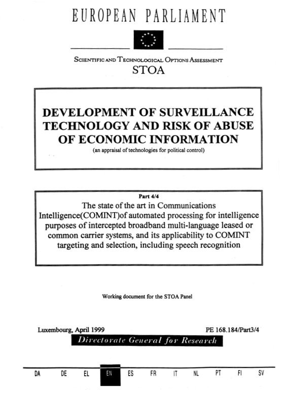
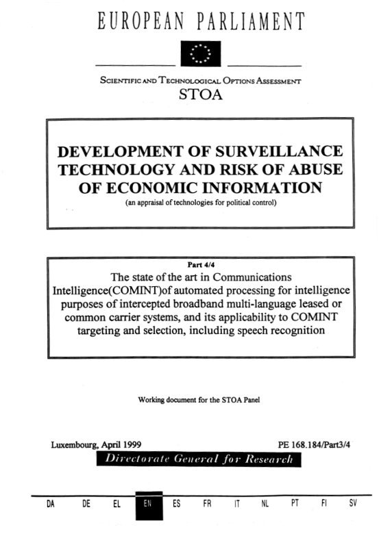
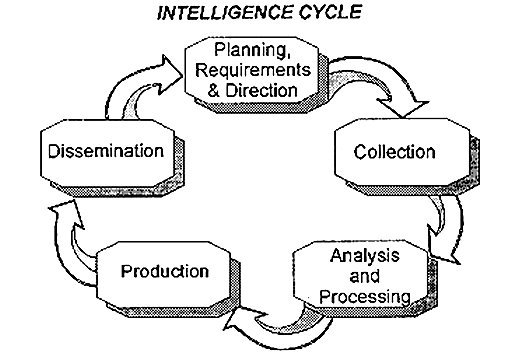
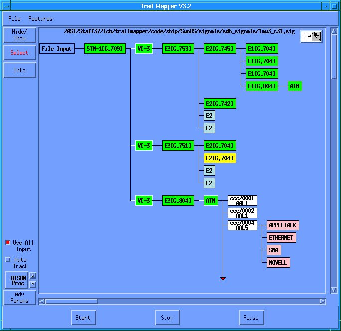

![TOP SECRET//SI/TK//NOFORN
(Dollars in Thousands)
Resource Exhibit No. 1A
National Intelligence Program
Funds by Program
FY 2011 – FY 2017
This Exhibit is SECRET//NOFORN
FY 2011
Actual FY 2012
Appropriated FY 2013
Base
CCP 10,737,163 10,514,035 CIAP 14,652,379 15,332,901 292,000
Program
CIARDS
CMA
FY 2012 – FY 2013
Change
–––––––––––––––––––
Funds
Percent
FY 2013 –
FY 2017
Total 1
FY 2013
OCO FY 2013
Request 10,036,851 730,914 10,767,765 253,730 2 50,652,537
12,037,708 2,672,317 14,710,025 -622,876 -4 64,567,982
513,700 514,000 — 514,000 300 — 2,570,000
10,274,665
2,063,394 1,870,255 1,676,387 — 1,676,387 -193,868 -10 DHS 275,136 307,359 284,332 — 284,332 -23,027 -7 1,462,089
DoD-FCIP 517,720 505,895 456,475 72,485 528,960 23,065 5 2,487,905
2,978,329 3,010,795 3,019,958 — 3,019,958 9,163 — 15,596,944
163,700 186,699 188,619 — 188,619 1,920 1 943,095
4,767,009 4,815,583 3,655,662 774,480 4,430,142 -385,441 -8 19,901,677
DOJ
Energy
GDIP
NGP 5,227,945 5,041,569 4,339,195 539,735 4,878,930 -162,639 -3 22,786,959
NRP 11,401,745 10,411,335 10,268,773 53,150 10,321,923 -89,412 -1 54,842,860
SRP 1,466,792 1,267,751 1,099,820 33,784 1,133,604 -134,147 -11 6,010,922
State 68,773 68,203 72,655 — 72,655 4,452 7 377,056
Treasury 27,422 27,123 27,297 — 27,297 174 1 138,274
54,639,507 53,873,203 47,677,732 4,876,865 52,554,597 -1,318,606 -2 252,612,965
NIP Total
1
FY 2013-2017 Total includes the OCO Request for FY 2013 only.
TOP SECRET//SI/TK//NOFORN
133TOP SECRET//SI/TK//NOFORN
Resource Exhibit No. 1B
National Intelligence Program
(Number of Personnel)
(Number of Positions)
Total Personnel 1 and Total Positions 2 by Program
FY 2011 - FY 2013
This Exhibit is SECRET//NOFORN
FY 2011 Actual
FY 2012 Authorized
FY 2012 - FY 2013
Change
FY 2013 Request
FY 2012 - FY 2013
Change
Total
Personnel Total
Positions Total
Personnel Total
Positions Total
Personnel Total
Positions Total
Personnel Percent Total
Positions CCP 34,367 34,367 35,083 35,083 34,901 34,901 -182 -1 -182 -1
CIAP 21,426 21,416 22,206 21,459 22,206 21,459 — — — —
— — — — — — — — — —
1,719 1,898 1,742 1,914 1,813 1,909 71 4 -5 0
762 838 940 1,000 885 965 -55 -6 -35 -4
Program
CIARDS
CMA
DHS
DoD-FCIP
DOJ
Energy
Percent
2,099 2,162 2,152 2,217 2,271 2,332 119 6 115 5
14,800 15,037 15,058 15,345 15,072 15,338 14 0 -7 —
199 199 198 198 199 199 1 1 1 1
GDIP 17,202 18,322 17,562 18,527 17,239 17,904 -323 -2 -623 -3
NGP 8,705 8,678 8,813 8,982 8,519 8,484 -294 -3 -498 -6
NRP 2,867 2,783 2,871 2,783 2,904 2,773 33 1 -10 0
SRP 249 249 249 249 249 249 — — — —
State 359 360 360 361 363 364 3 1 3 1
Treasury 151 158 155 158 156 158 1 1 — —
104,905 106,467 107,389 108,276 106,777 107,035 -612 -1 -1,241 -1
NIP Total
1 Total Personnel is the sum of Civilian FTEs and Military Positions and excludes Foreign Indirect Hires.
2 Total Positions is the sum of Civilian Positions and Military Positions and excludes Foreign Indirect Hires.
134
TOP SECRET//SI/TK//NOFORNTOP SECRET//SI/TK//NOFORN
Resource Exhibit No. 2A
National Intelligence Program
Funds by Program and Service/Agency
FY 2011 - FY 2017
This Exhibit is SECRET//NOFORN
(Dollars in Thousands)
FY 2012 - FY 2013
Change
Program
Service/
Agency
FY 2011
FY 2012
Actual Appropriated
FY 2013
Base
FY 2013
OCO FY 2013
Request
FY 2013 -
Funds
Percent FY 2017 Total 1
Department of Defense, NIP
CCP
Air Force 164,934 168,497 157,833 3,523 161,356 -7,141 -4 830,815
Army 108,003 107,912 74,444 21,603 96,047 -11,865 -11 397,401
— 837 1,046 — 1,046 209 25 5,404
NSA 10,394,017 10,177,996 9,750,818 705,788 10,456,606 278,610 3 49,141,080
Navy 70,209 58,793 52,710 — 52,710 -6,083 -10 277,837
10,737,163 10,514,035 10,036,851 730,914 10,767,765 253,730 2 50,652,537
14,652,379 15,332,901 12,037,708 2,672,317 14,710,025 -622,876 -4 64,567,982
14,652,379 15,332,901 12,037,708 2,672,317 14,710,025 -622,876 -4 64,567,982
1,390,793 1,322,364 1,136,135 — 1,136,135 -186,229 -14 7,384,743
1,390,793 1,322,364 1,136,135 — 1,136,135 -186,229 -14 7,384,743
122,927 103,393 87,322 9,903 97,225 -6,168 -6 462,967
97,857 98,039 91,432 19,360 110,792 12,753 13 510,468
DIA 162,829 171,927 137,672 30,552 168,224 -3,703 -2 760,843
DSS 3,588 3,625 7,386 — 7,386 3,761 104 36,720
DTRA 5,593 6,605 9,308 — 9,308 2,703 41 43,821
124,926 122,306 123,355 12,670 136,025 13,719 11 673,086
517,720 505,895 456,475 72,485 528,960 23,065 5 2,487,905
Air Force 708,306 731,191 610,153 6,844 616,997 -114,194 -16 3,442,093
Army 267,515 266,867 200,066 23,480 223,546 -43,321 -16 1,033,545
3,225,544 3,267,174 2,412,077 739,613 3,151,690 -115,484 -4 13,186,766
— — 479 — 479 479 — 2,173
488,152 477,668 432,887 4,543 437,430 -40,238 -8 2,237,100
77,492 72,683 — — — -72,683 -100 —
4,767,009 4,815,583 3,655,662 774,480 4,430,142 -385,441 -8 19,901,677
Marine
Corps
CCP Total
CIAP
CIA
CIAP Total
CMA
Air Force
CMA Total
DoD-FCIP
Air Force
Army
Navy
DoD-FCIP Total
GDIP
DIA
Marine
Corps
Navy
SOCOM
GDIP Total
NGP
Air Force
101,540 112,930 114,383 — 114,383 1,453 1 522,051
Army 47,802 52,620 49,052 — 49,052 -3,568 -7 264,527
NGA 5,068,107 4,860,907 4,160,116 539,676 4,699,792 -161,115 -3 21,912,709
Navy 10,496 15,112 15,644 59 15,703 591 4 87,672
5,227,945 5,041,569 4,339,195 539,735 4,878,930 -162,639 -3 22,786,959
11,401,745 10,411,335 10,268,773 53,150 10,321,923 -89,412 -1 54,842,860
11,401,745 10,411,335 10,268,773 53,150 10,321,923 -89,412 -1 54,842,860
1,466,792 1,267,751 1,099,820 33,784 1,133,604 -134,147 -11 6,010,922
1,466,792 1,267,751 1,099,820 33,784 1,133,604 -134,147 -11 6,010,922
50,161,546 49,211,433 43,030,619 4,876,865 47,907,484 -1,303,949 -3 228,635,585
292,000 513,700 514,000 — 514,000 300 0 2,570,000
292,000 513,700 514,000 — 514,000 300 0 2,570,000
672,601 547,891 540,252 — 540,252 -7,639 -1 2,889,922
672,601 547,891 540,252 — 540,252 -7,639 -1 2,889,922
NGP Total
NRP
NRO
NRP Total
SRP
Navy
SRP Total
Department of Defense, NIP
Total
Non-Defense, NIP
CIARDS
CIARDS
CIARDS Total
CMA
CMA Total
CMA
TOP SECRET//SI/TK//NOFORN
135TOP SECRET//SI/TK//NOFORN
(Dollars in Thousands)
Resource Exhibit No. 2A (continued)
National Intelligence Program
Funds by Program and Service/Agency
FY 2011 - FY 2017
This Exhibit is SECRET//NOFORN
FY 2012 - FY 2013
Change
Program
DHS
Service/
Agency
CG Non-
DoD
DHS
DHS Total
DOJ
DEA
FBI
DOJ Total
Energy
Energy
Energy Total
State
State
State Total
Treasury
Treasury
Treasury Total
Non-Defense, NIP Total
National Intelligence Program
Total
FY 2011
FY 2012
Actual Appropriated
FY 2013
OCO FY 2013
Request Funds Percent FY 2017 Total 1
22,687 47,717 51,101 — 51,101 3,384 7 262,775
252,449 259,642 233,231 — 233,231 -26,411 -10 1,199,314
275,136 307,359 284,332 — 284,332 -23,027 -7 1,462,089
13,578 13,647 14,123 — 14,123 476 3 73,059
2,964,751 2,997,148 3,005,835 — 3,005,835 8,687 0 15,523,885
2,978,329 3,010,795 3,019,958 — 3,019,958 9,163 0 15,596,944
163,700 186,699 188,619 — 188,619 1,920 1 943,095
163,700 186,699 188,619 — 188,619 1,920 1 943,095
68,773 68,203 72,655 — 72,655 4,452 7 377,056
68,773 68,203 72,655 — 72,655 4,452 7 377,056
27,422 27,123 27,297 — 27,297 174 1 138,274
27,422 27,123 27,297 — 27,297 174 1 138,274
4,477,961 4,661,770 4,647,113 — 4,647,113 -14,657 0 23,977,380
54,639,507 53,873,203 47,677,732 4,876,865 52,554,597 -1,318,606 -2 252,612,965
1
FY 2013 - FY 2017 Total includes the OCO only for FY 2013.
136
FY 2013 -
FY 2013
Base
TOP SECRET//SI/TK//NOFORNTOP SECRET//SI/TK//NOFORN
Resource Exhibit No. 2B
National Intelligence Program
(Number of Civilian FTEs)
(Number of Military Positions)
Total Personnel by Program and Service/Agency 1
FY 2011 - FY 2013
This Exhibit is SECRET//NOFORN
Program
FY 2012 - FY 2013 Change
FY 2011 Actual
Total Personnel FY 2012 Enacted
Total Personnel FY 2013 Request
Total Personnel Total Personnel Percent
Air Force 5,337 5,345 5,310 -35 -1
Army 3,272 3,270 3,254 -16 -0
— 393 392 -1 -0
NSA 20,877 21,650 21,575 -75 -0
Navy 4,881 4,425 4,370 -55 -1
34,367 35,083 34,901 -182 -1
21,426 22,206 22,206 — —
21,426 22,206 22,206 — —
963 1,052 1,047 -5 -0
963 1,052 1,047 -5 —
Air Force 705 712 726 14 2
Army 500 519 571 52 10
DIA 310 336 367 31 9
DSS 9 9 14 5 56
DTRA 33 36 40 4 11
Marine Corps 13 13 17 4 31
529 527 536 9 2
2,099 2,152 2,271 119 6
3,141 3,234 2,985 -249 -8
-9
Service/Agency
Department of Defense, NIP
CCP
Marine Corps
CCP Total
CIAP
CIA
CIAP Total
CMA
Air Force
CMA Total
DoD-FCIP
Navy
DoD-FCIP Total
GDIP
Air Force
Army
DIA
Marine Corps
Navy
SOCOM
-105 358 3
— 224 268 44 20
2,459 2,305 2,292 -13 -1
358 — -358 -100
17,562 17,239 -323 -2
Air Force 274 292 297 5 2
Army 182 250 214 -36 -14
— 6 35 29 483
NGA 8,224 8,233 7,943 -290 -4
Navy 25 32 30 -2 -6
8,705 8,813 8,519 -294 -3
1,577 1,577 1,618 41 3
Army 22 22 22 — —
NRO 972 976 975 -1 -0
Navy 296 296 289 -7 -2
2,867 2,871 2,904 33 1
249 249 249 — —
NGP Total
Air Force
NRP Total
SRP
1,041 10,653 358
Marine Corps
NRP
1,146 10,295 17,202
GDIP Total
NGP
1,064 10,180
Navy
SRP Total
Department of Defense, NIP Total
249 249 249 — —
87,878 89,988 89,336 -652 -1
756 690 766 76 11
756 690 766 76 11
Non-Defense, NIP
CMA
CMA
CMA Total
1
Excludes Foreign Indirect Hires
TOP SECRET//SI/TK//NOFORN
137TOP SECRET//SI/TK//NOFORN
(Number of Civilian FTEs)
(Number of Military Positions)
Resource Exhibit No. 2B (continued)
National Intelligence Program
Total Personnel by Program and Service/Agency 1
FY 2011 - FY 2013
This Exhibit is SECRET//NOFORN
FY 2012 - FY 2013 Change
Program Service/Agency FY 2011 Actual
Total Personnel FY 2012 Enacted
Total Personnel FY 2013 Request
Total Personnel Total Personnel DHS CG Non-DoD 142 250 259 9 4
DHS 620 690 626 -64 -9
762 940 885 -55 -6
58 58 58 — —
14,742 15,000 15,014 14 0
14,800 15,058 15,072 14 0
199 198 199 1 1
199 198 199 1 1
359 360 363 3 1
359 360 363 3 1
151 155 156 1 1
1
DHS Total
DOJ
DEA
FBI
DOJ Total
Energy
Energy
Energy Total
State
State
State Total
Treasury
Treasury
Treasury Total
Non-Defense, NIP Total
National Intelligence Program Total
151 155 156 1 17,027 17,401 17,441 40 0
104,905 107,389 106,777 -612 -1
1
Excludes Foreign Indirect Hires
138
Percent
TOP SECRET//SI/TK//NOFORNTOP SECRET//SI/TK//NOFORN
Resource Exhibit No. 5
National Intelligence Program
Budget Authority by Program and Appropriation
FY 2011 - FY 2017
This Exhibit is SECRET//NOFORN
Program Appropriation
CCP Fam Hsg Con, AF
Fam Hsg O&M, AF
Fam Hsg O&M, DW
— —
4,052 4,119 3,463 3,438 3,406 3,482 3,642
FY 2017
11,147 11,335 11,527 11,883
125,698 53,000 47,321
O&M, A 108,003 107,912 96,047 72,698 74,711 76,287 77,658
OP, AF
CIARDS
CIARDS
Total
ICMA
RDT&E, AF
CMA Total
Analysis and Operations,
DHS
Office of the Under Secretary
for Management
Operating Expenses
DHS Total
Construction
Salaries and Expenses, DEA
160,832 164,328 157,893 162,002 161,848 164,988 166,653
6,644,135 6,807,617 7,007,018 6,757,464 6,758,435 6,967,731 7,056,018
— 837 1,046 1,061 1,081 1,101 1,115
70,209 58,793 52,710 54,756 55,810 56,932 57,629
403,589 336,503 369,762 348,313 323,805 324,545 322,735
2,627,944 2,661,873 2,506,823 2,370,319 2,248,074 2,221,552 2,206,019
10,737,163 10,514,035 10,767,765 10,288,751 9,764,203 9,881,145 9,950,673
14,652,379 15,332,901 14,710,025 12,109,861 12,299,144 12,633,506 12,815,446
14,652,379 15,332,901 14,710,025 12,109,861 12,299,144 12,633,506 12,815,446
292,000 513,700 514,000 514,000 514,000 514,000 514,000
292,000 513,700 514,000 514,000 514,000 514,000 514,000
672,601 547,891 540,252 566,850 578,665 597,119 607,036
1,390,793 1,322,364 1,136,135 1,382,639 1,650,208 1,511,045 1,704,716
2,063,394 1,870,255 1,676,387 1,949,489 2,228,873 2,108,164 2,311,752
223,299 231,542 205,085 206,932 210,449 214,026 218,094
29,150 28,100 28,146 28,397 28,883 29,374 29,928
22,687 47,717 51,101 51,560 52,438 53,332 54,344
275,136 307,359 284,332 286,889 291,770 296,732 302,366
105,095 78,982 78,982 80,326 81,693 83,081 84,577
13,578 13,647 14,123 14,362 14,605 14,851 15,118
2,859,656 2,918,166 2,926,853 2,973,857 3,021,655 3,070,260 3,122,601
2,978,329 3,010,795 3,019,958 3,068,545 3,117,953 3,168,192 3,222,296
21 — — — — — —
97,444 97,616 110,358 95,410 98,543 101,479 102,431
O&M, AF 120,818 101,244 95,040 84,986 88,193 91,329 92,117
O&M, DW 159,996 170,114 179,886 151,252 156,524 164,933 165,868
O&M, MC 507 1,632 4,329 4,857 5,437 5,224 5,347
124,419 120,674 129,494 123,291 127,003 130,399 131,587
OP, A 413 423 434 441 449 457 466
OP, N — — 1,001 — — — —
P, MC — — 1,201 800 800 1,500 816
RDT&E, AF 2,109 2,149 2,185 2,221 2,258 2,296 2,342
RDT&E, DW 11,993 12,043 5,032 4,998 4,947 3,999 3,945
517,720 505,895 528,960 468,256 484,154 501,616 504,919
163,700 186,699 188,619 188,619 188,619 188,619 188,619
163,700 186,699 188,619 188,619 188,619 188,619 188,619
Salaries and Expenses, FBI
DOJ Total
BRAC
O&M, A
O&M, N
DoD-FCIP
Total
144
— 507,553
CIAP Total
Energy Total
— 10,973
CCP Total
Energy
FY 2016 — 562,030
RDT&E, DW
DoD-FCIP
FY 2015 50 10,250
P, DW
DOJ
FY 2014 50 361,753
O&M, N
DHS
FY 2013 1 10,402
O&M, MC
CMA
FY 2012 707,947
O&M, DW
CIARDS
FY 2011 MilCon, DW
O&M, AF
CIAP
(Dollars in Thousands)
Other Defense Activities
TOP SECRET//SI/TK//NOFORNTOP SECRET//SI/TK//NOFORN
(Dollars in Thousands)
Resource Exhibit No. 5 (continued)
National Intelligence Program
Budget Authority by Program and Appropriation
FY 2011 - FY 2017
This Exhibit is SECRET//NOFORN
FY 2011 FY 2012 FY 2013 1 FY 2014 FY 2015 FY 2016 FY 2017
AP, AF 12,909 16,502 20,164 16,991 17,463 12,018 9,303
BRAC 5,022 — — — — — —
Fam Hsg O&M, DW 38,548 39,251 39,993 40,628 41,318 42,020 42,872
MilCon, AF 78,851 79,000 — — — — —
MilCon, DW 2,994 30,584 2,919 — — — —
O&M, A 260,679 259,869 218,177 200,632 192,443 195,603 198,911
O&M, AF 514,077 549,487 525,873 529,506 602,706 619,833 633,745
3,090,315 3,109,351 2,976,404 2,281,670 2,329,035 2,365,332 2,403,146
Program Appropriation
GDIP
O&M, DW
O&M, MC
O&M, N
OP, A
33,046 33,542 34,062
348,602 354,775 360,840
2,975 1,270 1,291 1,313 1,341 1,368
OP, AF 24,573 41,394 56,888 67,947 61,414
OP, N 21,608 14,402 12,062 10,108 10,132 10,243 10,466
P, DW 46,072 39,035 24,991 37,258 24,771 20,846 21,120
P, MC — — 479 446 410 415 423
3,928 4,023 4,099 4,163 4,235 4,306 4,393
RDT&E, AF 41,914 56,787 46,387 52,482 43,036 30,531 29,839
RDT&E, DW 120,085 121,636 107,383 96,022 95,992 96,345 96,701
60,458 72,472 50,823 51,131 53,612 54,211 55,342
4,767,009 4,815,583 4,430,142 3,743,280 3,855,002 3,909,308 3,963,945
134,297 1,791 — — — — —
— 63,878 — — — — 265,504
O&M, A 47,306 50,437 46,792 51,112 52,464 51,053 50,624
O&M, AF 72,629 82,585 82,508 82,706 82,247 78,570 74,225
O&M, DW 3,786,519 3,765,161 3,622,550 3,079,112 3,174,373 3,165,183 3,264,611
O&M, MC 1,859 4,720 6,976 7,441 7,901 7,281 7,336
O&M, N 8,141 8,280 7,601 8,059 8,535 8,413 8,567
OP, A — 1,670 1,731 1,822 1,948 2,088 2,130
P, DW 271,191 188,749 194,051 199,672 228,300 272,839 146,748
908
BRAC
MilCon, DW
P, MC
— 1,606 610 3,208 1,292 901 496 513 529 543 560 560 571
RDT&E, AF 28,911 30,345 31,875 28,684 29,483 18,364 13,389
RDT&E, DW 876,100 841,328 883,191 809,324 907,295 931,652 768,304
496 506 516 523 531 531 542
5,227,945 5,041,569 4,878,930 4,272,206 4,494,929 4,537,435 4,603,459
MslP, AF 805,106 768,980 1,097,483 1,378,812 1,908,564 1,662,508 1,438,311
O&M, AF 52,831 49,729 57,086 59,257 61,019 62,832 65,625
O&M, N 20,757 27,012 22,943 23,821 24,536 25,272 26,420
OP, AF 2,279,991 2,338,408 2,269,031 2,299,888 2,491,919 2,630,320 2,719,955
RDT&E, AF 8,243,060 7,227,206 6,875,380 6,568,544 6,511,225 7,018,456 7,543,653
11,401,745 10,411,335 10,321,923 10,330,322 10,997,263 11,399,388 11,793,964
1,466,792 1,267,751 1,133,604 1,137,278 1,218,707 1,248,078 1,273,255
1,466,792 1,267,751 1,133,604 1,137,278 1,218,707 1,248,078 1,273,255
RDT&E, A
RDT&E, N
NGP Total
NRP Total
SRP Total
33,738 345,820 29,415
RDT&E, N
SRP
35,658 338,887 2,908
GDIP Total
NRP
38,561 352,233 60,555
RDT&E, A
NGP
— 406,086
RDT&E, N
TOP SECRET//SI/TK//NOFORN
145TOP SECRET//SI/TK//NOFORN
(Dollars in Thousands)
Resource Exhibit No. 5 (continued)
National Intelligence Program
Budget Authority by Program and Appropriation
FY 2011 - FY 2017
This Exhibit is SECRET//NOFORN
Program Appropriation
State Diplomatic and Consular
Programs
State Total
Treasury
Salaries and Expenses,
Treasury
Treasury
Total
National Intelligence Program Total
FY 2011 FY 2012 FY 2013 1 FY 2014 FY 2015 FY 2016 FY 2017
68,773 68,203 72,655 73,981 75,373 76,798 78,249
68,773 68,203 72,655 73,981 75,373 76,798 78,249
27,422 27,123 27,297 27,474 27,652 27,832 28,019
27,422 27,123 27,297 27,474 27,652 27,832 28,019
54,639,507 53,873,203 52,554,597 48,458,951 49,557,642 50,490,813 51,550,962
1
FY 2013 - FY 2017 Total includes the OCO only for FY 2013.
146
TOP SECRET//SI/TK//NOFORNTOP SECRET//SI/TK//NOFORN
Resource Exhibit No. 7B
National Intelligence Program
Comparison of FY 2012 Total and FY 2013 Total Request by Program
This Exhibit is SECRET//NOFORN
(Dollars in Thousands)
FY 2012
Total CCP 10,514,035 10,036,851 730,914 10,767,765 253,730
CIAP 15,332,901 12,037,708 2,672,317 14,710,025 -622,876
513,700 514,000 — 514,000 300
1,870,255 1,676,387 — 1,676,387 -193,868
Program
FY 2013
OCO
Request FY 2013
Total
Request
FY 2012 Total
Compared to
FY 2013 Total
Request
FY 2013
Base
Request
Defense Appropriations
CIARDS
CMA
DoD-FCIP
GDIP
505,895 456,475 72,485 528,960 23,065
4,815,583 3,655,662 774,480 4,430,142 -385,441
-162,639
NGP 5,041,569 4,339,195 539,735 4,878,930 NRP 10,411,335 10,268,773 53,150 10,321,923 -89,412
SRP 1,267,751 1,099,820 33,784 1,133,604 -134,147
50,273,024 44,084,871 4,876,865 48,961,736 -1,311,288
Defense Appropriations Total
Non-Defense Appropriations
DHS 307,359 284,332 — 284,332 -23,027
DOJ 3,010,795 3,019,958 — 3,019,958 9,163
186,699 188,619 — 188,619 1,920
State 68,203 72,655 — 72,655 4,452
Treasury 27,123 27,297 — 27,297 174
3,600,179 3,592,861 — 3,592,861 -7,318
53,873,203 47,677,732 4,876,865 52,554,597 -1,318,606
Energy
Non-Defense Appropriations Total
National Intelligence Program
Total
TOP SECRET//SI/TK//NOFORN
151TOP SECRET//SI/TK//NOFORN
Resource Exhibit No. 9
National Intelligence Program
Estimated Funding for Counterterrorism
FY 2011 - FY 2013
This Exhibit is SECRET//NOFORN
(Dollars in Thousands)
FY 2012 - FY 2013 Change
FY 2011
Actual FY 2012
Enacted FY 2013
Base FY 2013
OCO FY 2013
Request Funds CCP 2,651,989 2,570,763 1,827,354 730,914 2,558,268 -12,495 0
CIAP 6,796,553 7,073,722 4,473,356 2,205,992 6,679,348 -394,374 -6
CMA 1,215,078 1,172,548 1,057,954 — 1,057,954 -114,594 -10
DHS — 183,033 165,407 — 165,407 -17,626 -10
DOJ 1,372,785 1,378,348 1,386,791 — 1,386,791 8,443 1
3,131 3,108 3,108 — 3,108 — —
GDIP 1,344,200 1,250,442 599,789 408,440 1,008,229 -242,213 -19
NGP 1,358,459 1,255,741 674,758 523,017 1,197,775 -57,966 -5
NRP 2,071,936 2,024,003 2,227,589 9,036 2,236,625 212,622 11
SRP 366,809 321,924 254,681 33,784 288,465 -33,459 -10
Program
Energy
State
Treasury
Counterterrorism Total
154
Percent
2,835 2,819 2,896 — 2,896 77 3
15,221 15,194 15,044 — 15,044 -150 -1
17,198,996 17,251,645 12,688,727 3,911,183 16,599,910 -651,735 -4
TOP SECRET//SI/TK//NOFORNTOP SECRET//SI/TK//NOFORN
Resource Exhibit No. 10
National Intelligence Program
Estimated Funding for Counterproliferation
FY 2011 - FY 2013
This Exhibit is SECRET//NOFORN
(Dollars in Thousands)
FY 2012 - FY 2013 Change
FY 2011
Actual FY 2012
Enacted FY 2013
Base FY 2013
OCO FY 2013
Request Funds 824,757 860,681 864,288 — 864,288 3,607 0
CIAP 1,932,216 2,084,133 2,065,665 6,069 2,071,734 -12,399 -1
CMA 272,168 211,998 177,767 — 177,767 -34,231 -16
DHS — 2,189 2,265 — 2,265 76 3
DOJ 328,787 333,344 333,033 — 333,033 -311 0
86,852 105,956 119,643 — 119,643 13,687 13
GDIP 673,450 651,608 459,139 60,816 519,955 -131,653 -20
NGP 847,285 850,970 859,703 16,718 876,421 25,451 3
NRP 1,853,746 1,614,191 1,564,895 4,784 1,569,679 -44,512 -3
SRP 184,262 163,182 146,448 — 146,448 -16,734 -10
State 1,385 1,377 1,413 — 1,413 36 3
Treasury 2,439 2,381 2,478 — 2,478 97 4
7,007,347 6,882,010 6,596,737 88,387 6,685,124 -196,886 -3
Program
CCP
Energy
Counterproliferation Total
TOP SECRET//SI/TK//NOFORN
Percent
155TOP SECRET//SI/TK//NOFORN
Resource Exhibit No. 11
National Intelligence Program
(Dollars in Thousands)
Estimated Funding for Homeland Security With Related WMD 1
FY 2011 - FY 2013
This Exhibit is SECRET//NOFORN
FY 2012 - FY 2013 Change
FY 2011
Actual FY 2012
Enacted FY 2013
Base FY 2013
OCO FY 2013
Request
Description Program Funds Percent
Homeland Security CCP 358,204 382,225 394,295 1,754 396,049 13,824 4
CIAP 36,492 39,314 39,625 — 39,625 311 1
CMA 335,798 301,108 325,186 — 325,186 24,078 8
DHS 272,186 300,624 273,758 — 273,758 -26,866 -9
DoD-FCIP
14,867 14,765 14,553 — 14,553 -212 -1
2,592,144 2,807,474 2,831,971 — 2,831,971 24,497 1
Energy 73,158 73,853 73,795 — 73,795 -58 0
GDIP 22,841 6,752 6,719 — 6,719 -33 0
NGP 170,837 165,759 121,244 — 121,244 -44,515 -27
DoJ
NRP 7,545 7,001 6,070 — 6,070 -931 -13
SRP 25,949 20,826 18,799 — 18,799 -2,027 -10
1
State
401 401 406 — 406 5 27,422 27,123 27,296 — 27,296 173 1
3,937,844 4,147,225 4,133,717 1,754 4,135,471 -11,754 -1
— 689 691 — 691 2 0
DoJ 76,318 76,556 76,970 — 76,970 414 1
Energy 18,895 17,579 17,579 — 17,579 — —
95,213 94,824 95,240 — 95,240 416 1
4,033,057 4,242,049 4,228,957 1,754 4,230,711 -11,338 -1
Treasury
Homeland Security Total
Homeland Security - Related
DHS
WMD
Homeland Security -
Related WMD Total
NIP Homeland Security with Related
Weapons of Mass Destruction Total
1
Definition of Homeland Security from OMB Circular A-11.
156
TOP SECRET//SI/TK//NOFORNTOP SECRET//SI/TK//NOFORN
Resource Exhibit No. 12
National Intelligence Program
Estimated Funding for Counternarcotics
FY 2011 - FY 2013
This Exhibit is SECRET//NOFORN
(Dollars in Thousands)
FY 2012 - FY 2013 Change
FY 2011
Actual FY 2012
Enacted FY 2013
Base FY 2013
OCO FY 2013
Request Funds CCP 308,321 308,087 318,938 — 318,938 10,851 4
CIAP 579,033 574,392 461,457 210 461,667 -112,725 -20
CMA 9,145 17,188 14,415 — 14,415 -2,773 -16
DOJ 13,578 13,647 14,123 — 14,123 476 3
-2
Program
GDIP
Percent
257 290 284 — 284 -6 NGP 144,361 141,931 141,226 — 141,226 -705 0
NRP 305,372 265,267 259,312 570 259,882 -5,385 -2
SRP 47,609 40,554 34,503 — 34,503 -6,051 -15
State 715 710 730 — 730 20 3
Treasury 309 310 332 — 332 22 7
1,408,700 1,362,376 1,245,320 780 1,246,100 -116,276 -9
Counternarcotics Total
TOP SECRET//SI/TK//NOFORN
157TOP SECRET//SI/TK//NOFORN
Resource Exhibit No. 13
National Intelligence Program
Budget Authority by Program, Expenditure Center, and Project
FY 2011 - FY 2013
This Exhibit is SECRET//NOFORN
FY 2011 FY 2012 FY 2013 FY 2012 -
FY 2013
Change
32,962 34,635 39,752 5,117
164,090 145,981 138,639 -7,342
98,983 92,199 80,817 -11,382
Regional 191,839 227,812 207,302 -20,510
Transnational 159,521 160,573 188,132 27,559
647,395 661,200 654,642 -6,558
Analytic Operational Support 171,484 175,530 179,561 4,031
Analytics Modernization 423,831 512,479 427,449 -85,030
Linguists/Translators 228,123 226,820 217,504 -9,316
823,438 914,829 824,514 -90,315
16,618
Program Expenditure Center Project
CCP Analysis Analytic Integrity & Standards
Cyber
Military Forces & Weapons Analysis
Analysis Total
Analysis Enabling
Analysis Enabling Total
Computer Network Operations
Data Acquisition and Cover Support
56,949 100,987 117,605 GENIE 615,177 636,175 651,743 15,568
SIGINT Enabling 298,613 275,376 254,943 -20,433
970,739 1,012,538 1,024,291 11,753
Computer Network Operations Total
Cryptanalysis & Exploitation Services
Analysis of Target Systems
39,429 35,128 34,321 -807
Cryptanalytic IT Systems 130,012 136,797 247,121 110,324
Cyber Cryptanalysis 181,834 110,673 115,300 4,627
Exploitation Solutions 90,024 59,915 58,308 -1,607
Microelectronics 64,603 61,672 45,886 -15,786
PEO Program 37,683 65,892 47,185 -18,707
PEO Program B 132,500 39,471 18,000 -21,471
PEO Program C 83,599 242,945 360,898 117,953
Target Pursuit 75,686 70,144 76,168 6,024
Target Reconnaissance & Survey 77,668 74,513 — -74,513
913,038 897,150 1,003,187 106,037
Connectivity 407,592 366,995 363,554 -3,441
Data Handling & End-User
Functionality 157,110 237,642 225,780 -11,862
Cryptanalysis & Exploitation Services
Total
Enterprise IT Systems
Enterprise Architecture & Planning
Information Assurance
Management & Support
Platforms
Enterprise IT Systems Total
Enterprise Management
Acquisition Management
COOP
Corporate Support
Education & Training
Entitlements Reimbursement
Finance
Foreign Relations & Liaison
18,233 11,801 16,467 4,666
141,190 174,659 139,893 -34,766
79,799 92,200 93,395 1,195
773,633 729,336 750,215 20,879
1,577,557 1,612,633 1,589,304 -23,329
111,495 110,325 116,699 6,374
6,702 6,633 7,015 382
— 60,599 65,515 4,916
227,968 244,249 232,999 -11,250
2,089 1,805 1,805 —
108,355 95,415 110,879 15,464
23,312 24,328 20,868 -3,460
HQ Management 139,033 111,151 115,822 4,671
Human Resources 128,380 125,757 127,313 1,556
74,349 73,346 69,982 -3,364
Military HQ Management
158
(Dollars in Thousands)
TOP SECRET//SI/TK//NOFORNTOP SECRET//SI/TK//NOFORN
(Dollars in Thousands)
Resource Exhibit No. 13 (continued)
National Intelligence Program
Budget Authority by Program, Expenditure Center, and Project
FY 2011 - FY 2013
This Exhibit is SECRET//NOFORN
Program
Expenditure Center
Project
Security
Systems Engineering: SIGINT
Enterprise Management Total
Facilities & Logistics
Facilities
Logistics
Facilities & Logistics Total
Mid Point RF Access
FORNSAT
Quick Reaction Capabilities
RF Operations
Tailored RF Solutions
Terrestrial Collection
110,075 85,984 1,229,858 1,224,671 -5,187
1,490,711 1,199,825 1,514,217 314,392
105,409 107,464 102,501 -4,963
1,596,120 1,307,289 1,616,718 309,429
136,710 108,385 81,330 -27,055
40,136 45,957 — -45,957
103,985 65,538 98,922 33,384
— — 131,276 131,276
69,090 -15,212
76,436
76,193 113,924 125,896 11,972
149,188 173,186 158,473 -14,713
Foreign Partner Operations 74,746 71,642 67,287 -4,355
Journeyman 13,357 13,206 12,986 -220
Mission Management Modernization 29,139 22,220 22,333 113
342,623 394,178 386,975 -7,203
ELINT Modernization 75,999 40,923 55,706 14,783
FISINT Modernization 9,725 34,196 29,510 -4,686
292,217 281,552 219,583 -61,969
377,941 356,671 304,799 -51,872
20,777 44,254 29,579 -14,675
Collection Management
Computer & Information Science
Research
Coping with Information Overload 39,046 64,332 48,612 -15,720
Cryptologic Math & IDA Research 146,432 128,511 119,300 -9,211
Human Language Technology Research 26,361 34,030 29,357 -4,673
Improving Research Operations 37,181 30,503 31,195 692
Owning the Net 66,933 61,167 67,589 6,422
Penetrating Hard Targets 62,783 55,347 79,740 24,393
Ubiquitous Secure Collaboration
14,651 25,762 23,741 -2,021
414,164 443,906 429,113 -14,793
CLANSIG 346,961 325,506 348,196 22,690
SCS 269,708 245,829 249,088 3,259
616,669 571,335 597,284 25,949
Research & Technology Total
Sensitive Technical Collection Total
Cryptologic Centers
Field Sites
OCMC
SIGINT Ground Operations
SIGINT Stations Total
Special Source Access
-24,091
97,938 1,175,408 380,618
Mission Processing & Exploitation
Total
SIGINT Stations
3,615
84,302
Net-centric Capabilities
Sensitive Technical Collection
269,790 304,182
Mission Management / Tasking Total
Research & Technology
FY 2013 266,175 90,978
Customer Service
Mission Processing & Exploitation
FY 2012 255,787 371,809
Mid Point RF Access Total
Mission Management / Tasking
FY 2011 FY 2012 -
FY 2013
Change
Corporate Partner Access
Foreign Partner Access
TOP SECRET//SI/TK//NOFORN
29,299 30,602 24,588 -6,014
191,128 184,643 185,917 1,274
6,166 6,416 7,165 749
71,912 62,008 50,519 -11,489
298,505 283,669 268,189 -15,480
393,667 310,234 278,131 -32,103
90,979 75,108 56,593 -18,515
159TOP SECRET//SI/TK//NOFORN
(Dollars in Thousands)
Resource Exhibit No. 13 (continued)
National Intelligence Program
Budget Authority by Program, Expenditure Center, and Project
FY 2011 - FY 2013
This Exhibit is SECRET//NOFORN
Program
Expenditure Center
Project
National Program
Special Source Operations
Special Source Access Total
CCP Total
CIAP
Analysis
Analytic Integrity & Standards
126,489 -10,728
524,597 463,460 -61,137
10,737,163 10,514,035 10,767,765 253,730
-191
71
Regional 214,891 210,477 209,161 -1,316
Transnational 456,005 456,887 434,248 -22,639
690,926 687,942 663,867 -24,075
39,333 40,797 37,335 -3,462
239,295 257,685 252,862 -4,823
Mission Support 81,360 91,377 99,937 8,560
Production and Dissemination 22,564 25,046 34,488 9,442
382,552 414,905 424,622 9,717
Education & Training
Education & Training
Mission IT
CI Operations
Education & Training
Mission Activities and Support
Mission IT
Counterintelligence Total
Covert Action Infrastructure
4,209 2,245 2,250 5
637,295 652,559 673,399 20,840
7,830 9,443 9,726 283
649,334 664,247 685,375 21,128
125,942 141,669 140,061 -1,608
4,779 5,892 4,257 -1,635
15,785 14,497 11,784 -2,713
2,178 2,189 2,096 -93
148,684 164,247 158,198 -6,049
600,696 542,075 523,402 -18,673
2,011,811 1,970,933 2,036,006 65,073
2,612,507 2,513,008 2,559,408 46,400
Connectivity 85,795 67,225 70,878 3,653
Data Handling & End-User
Functionality 35,004 56,120 42,839 -13,281
Education & Training 9,566 9,782 10,267 485
Enterprise Architecture & Planning 8,252 8,619 15,306 6,687
Covert Action Programs
Covert Action Total
Information Assurance
768 12,736 6,328 -6,408
Management & Support 256,750 279,083 249,467 -29,616
Platforms 126,993 138,301 133,940 -4,361
523,128 571,866 529,025 -42,841
22,284 33,149 26,262 -6,887
9,401 8,748 6,188 -2,560
Corporate Support 113,139 129,224 148,737 19,513
Education & Training 104,253 110,671 101,423 -9,248
Enterprise IT Systems Total
Acquisition Management
COOP
Finance
52,198 51,810 57,853 6,043
HQ Management 153,774 115,838 113,833 -2,005
Human Resources 184,854 190,959 186,051 -4,908
Inspector General — 32,776 34,796 2,020
242,078 224,078 224,265 187
881,981 897,253 899,408 2,155
Security
Enterprise Management Total
160
137,217 611,757 5,872
Computer Network Operations Total
Enterprise Management
125,340 14,586
Information Operations
Enterprise IT Systems
209
6,063
Analysis Enabling Total
Covert Action
2,247 14,515
Mission IT
Counterintelligence
FY 2013 2,038 5,729
Analysis Total
Computer Network Operations
FY 2012 1,771 14,301
CI
Analysis Enabling
FY 2011 FY 2012 -
FY 2013
Change
TOP SECRET//SI/TK//NOFORNTOP SECRET//SI/TK//NOFORN
(Dollars in Thousands)
Resource Exhibit No. 13 (continued)
National Intelligence Program
Budget Authority by Program, Expenditure Center, and Project
FY 2011 - FY 2013
This Exhibit is SECRET//NOFORN
Program
Expenditure Center Project
Facilities & Logistics Facilities
Logistics
Facilities & Logistics Total
HUMINT Enabling
Cover Services
6,199
Mission IT 794,985 815,727 814,815 -912
1,376,353 1,527,520 1,476,607 -50,913
2,385,881 2,573,574 2,529,244 -44,330
Headquarters
19,268 18,918 19,119 201
456,491 453,143 466,137 12,994
1,737,389 1,815,936 1,858,423 42,487
2,213,148 2,287,997 2,343,679 55,682
Education & Training 8,488 10,606 11,167 561
Mission IT 6,619 7,844 6,358 -1,486
Special Activities and Platforms 373,212 368,215 356,571 -11,644
Tactical Collection 486,824 479,919 495,957 16,038
Technical Tradecraft 458,790 500,370 543,333 42,963
1,333,933 1,366,954 1,413,386 46,432
Mission IT 4,646 7,938 3,531 -4,407
National Clandestine Service
Community 8,282 9,252 7,373 -1,879
12,928 17,190 10,904 -6,286
245,531 260,126 253,068 -7,058
10,921 12,678 12,652 -26
153,126 111,136 121,627 10,491
409,578 383,940 387,347 3,407
Science and Research 85,315 87,310 76,763 -10,547
Strategic Technical Investment 61,862 52,640 50,198 -2,442
147,177 139,950 126,961 -12,989
15,000 20,000 35,000 15,000
15,000 20,000 35,000 15,000
1,208,948 1,431,227 837,755 -593,472
Clandestine Weapons Technical
Collection 239,093 247,072 266,429 19,357
CLANSIG -3,275
Collection & Production
Mission IT
Open Source Total
Research & Technology Total
Reserve
Reserve for Contingencies Total
Clandestine Technical Collection
446,216 467,900 464,625 Education & Training 13,889 15,269 21,574 6,305
SCS 95,006 121,537 105,758 -15,779
Support to National Programs 77,375 76,665 75,882 -783
Sensitive Technical Collection Total
CIAP Total
Enterprise Management
-1,125
-98,580
1,296
Education & Training
CIARDS
17,347 171,578 68,656
Mission Management / Tasking Total
Sensitive Technical Collection
18,472 270,158 169,166
HUMINT Technical Tools Total
Reserve for Contingencies
18,046 165,095 67,360
Traditional
Research & Technology
-97,455
162,967
HUMINT Operations Total
Open Source
154,231 57,765
Non-Traditional
Mission Management / Tasking
FY 2013 251,686 156,778
HUMINT Enabling Total
HUMINT Technical Tools
FY 2012 147,049 Education & Training
Mission Support
HUMINT Operations
FY 2011 FY 2012 -
FY 2013
Change
Human Resources
Enterprise Management Total
CIARDS Total
TOP SECRET//SI/TK//NOFORN
2,080,527 2,359,670 1,772,023 -587,647
14,652,379 15,332,901 14,710,025 -622,876
292,000 513,700 514,000 300
292,000 513,700 514,000 300
292,000 513,700 514,000 300
161TOP SECRET//SI/TK//NOFORN
(Dollars in Thousands)
Resource Exhibit No. 13 (continued)
National Intelligence Program
Budget Authority by Program, Expenditure Center, and Project
FY 2011 - FY 2013
This Exhibit is SECRET//NOFORN
FY 2011 FY 2012 FY 2013 FY 2012 -
FY 2013
Change
2,067 — — —
55,930 50,412 42,952 -7,460
7,969 8,017 8,488 471
65,966 58,429 51,440 -6,989
Chief Information Office 175,796 73,791 142,509 68,718
Information Integration 127,906 98,281 — -98,281
21,751 23,036 25,884 2,848
Program Expenditure Center Project
CMA Analysis Intelligence Today
NIC
President's Daily Briefing Staff
Analysis Total
Enterprise IT Systems
Program Manager Information Sharing
Environment
Enterprise IT Systems Total
Enterprise Management
325,453 195,108 168,393 -26,715
Acquisition and Technology 43,888 34,385 32,212 -2,173
Analysis 50,275 — — —
Chief Financial Office 16,734 24,690 30,582 5,892
Chief Human Capital Officer 54,885 35,434 — -35,434
Collection 39,797 — — —
COOP 70,862 72,552 57,817 -14,735
105,594 65,944 39,463 -26,481
84,068 89,492 — -89,492
Human Capital and Learning — — 103,903 103,903
Inspector General — 5,381 6,901 1,520
241,914 310,762 241,186 -69,576
— 17,105 22,800 5,695
Policy Plans and Requirements 18,758 — — —
Security 36,497 34,508 33,302 -1,206
Director of National Intelligence
Education & Training
Mission Support Center
Policy and Outreach Management
Systems and Resource Analysis
Enterprise Management Total
Mission Management / Tasking
Community CI
Mission Managers
National Intelligence Coordination
Center
National Intelligence Integration
61,980 46,888 -15,092
8,515 — — —
12,671 — — —
85,469 -10,520
40,606 22,461 -18,145
NCTC 376,700 368,373 371,578 3,205
515,457 566,948 526,396 -40,552
350,978 327,349 333,079 5,730
2,000 — — —
-5,222
Intelligence Advanced Research
Projects Activity (IARPA)
13,940 5,222 — 366,918 332,571 333,079 508
2,063,394 1,870,255 1,676,387 -193,868
223,299 230,084 192,343 -37,741
22,687 47,717 41,218 -6,499
245,986 277,801 233,561 -44,240
DHS Counterintelligence — — 12,742 12,742
USCG Counterintelligence — — 9,883 9,883
— — 22,625 22,625
CMA Total
Homeland Security
Transnational
Analysis Total
Counterintelligence Total
162
56,944 95,989
Rapid Technology Transition Initiative
Counterintelligence
1,967
-120,120
—
Research & Technology Total
Analysis
28,913 597,079 60,627
National R&D Commission
DHS
26,946 717,199 NCPC
Mission Management / Tasking Total
Research & Technology
26,328 789,600
TOP SECRET//SI/TK//NOFORNTOP SECRET//SI/TK//NOFORN
(Dollars in Thousands)
Resource Exhibit No. 13 (continued)
National Intelligence Program
Budget Authority by Program, Expenditure Center, and Project
FY 2011 - FY 2013
This Exhibit is SECRET//NOFORN
Program
Expenditure Center Project FY 2011 FY 2012 FY 2013 FY 2012 -
FY 2013
Change
Enterprise Management COOP — 1,458 — -1,458
29,150 28,100 28,146 46
29,150 29,558 28,146 -1,412
275,136 307,359 284,332 -23,027
34,283 37,974 38,162 188
34,283 37,974 38,162 188
CI Campaigns 75,625 67,937 60,750 -7,187
CI Operations 21,336 23,678 34,116 10,438
Defense Cyber Crime Center 15,459 17,935 19,328 1,393
Education & Training 39,072 37,821 36,159 -1,662
Security
Enterprise Management Total
DHS Total
DoD-FCIP
Analysis
CI
Analysis Total
Counterintelligence
Joint Terrorism Task Force
Mission Activities and Support
Mission IT
Research & Technology Protection
Counterintelligence Total
Enterprise IT Systems
Platforms
Enterprise IT Systems Total
Enterprise Management
HQ Management
Human Resources
Enterprise Management Total
Facilities & Logistics
Facilities
Facilities & Logistics Total
Analysis
422,747 445,517 22,770
12,774 15,578 16,183 605
12,774 15,578 16,183 605
24,199 21,382 20,613 -769
2,052 1,906 2,003 97
26,251 23,288 22,616 -672
21 6,308 6,482 174
114,083 116,434 — -116,434
Transnational 759,564 771,582 849,037 77,455
873,647 888,016 849,037 -38,979
147,022 148,427 149,263 836
147,022 148,427 149,263 836
562,345 367,383 489,821 122,438
562,345 367,383 489,821 122,438
54,670 40,960 40,034 -926
54,670 40,960 40,034 -926
41,029 46,429 45,945 -484
471,434 520,945 25,038 -495,907
512,463 567,374 70,983 -496,391
60,311 43,480 43,256 -224
60,311 43,480 43,256 -224
471,449 663,226 919,798 256,572
471,449 663,226 919,798 256,572
— — 168,146 168,146
296,422 291,929 289,620 -2,309
165,837
Linguists/Translators
CI Operations
Platforms
Education & Training
Facilities
Traditional
Computer Intrusions
Technical Services
Technical Operations Total
DOJ Total
Analysis
444,391 Computer Intrusions
HUMINT Operations Total
Energy
14,059
174
Facilities & Logistics Total
Technical Operations
-958
20,513 23,065
Enterprise Management Total
HUMINT Operations
36,364 6,454 6,482
HQ Management
Facilities & Logistics
37,322 6,424 528,960
Enterprise IT Systems Total
Enterprise Management
38,354 6,308
Counterintelligence Total
Enterprise IT Systems
-212
6,899
505,895
Analysis Enabling Total
Counterintelligence
14,553 223,734 21
Analysis Total
Analysis Enabling
14,765 216,835 517,720
DoD-FCIP Total
DOJ
14,867 233,254
Transnational
Analysis Total
TOP SECRET//SI/TK//NOFORN
296,422 291,929 457,766 2,978,329 3,010,795 3,019,958 9,163
105,862 126,288 142,771 16,483
105,862 126,288 142,771 16,483
163TOP SECRET//SI/TK//NOFORN
(Dollars in Thousands)
Resource Exhibit No. 13 (continued)
National Intelligence Program
Budget Authority by Program, Expenditure Center, and Project
FY 2011 - FY 2013
This Exhibit is SECRET//NOFORN
Program
Expenditure Center Project
Counterintelligence CI Operations
Counterintelligence Total
Analysis
1,920
1,081 1,592 — -1,592
C4ISR Analysis 98,071 100,670 133,051 32,381
Medical 19,791 21,689 20,218 -1,471
Military Forces & Weapons Analysis 136,704 126,135 127,647 1,512
Regional 164,595 170,533 154,064 -16,469
S&T Analysis 303,337 273,389 272,155 -1,234
Transnational 228,118 247,175 210,191 -36,984
Analytic Integrity & Standards
15,319 17,725 17,370 -355
967,016 958,908 934,696 -24,212
Analytic Tools 86,927 130,671 154,132 23,461
Education & Training 12,423 14,292 19,654 5,362
Connectivity
-9,666
19,157
-34,054
246,141 212,087 44,046 44,594 548
Information Assurance 22,943 42,238 44,184 1,946
Management & Support 189,018 169,135 147,293 -21,842
Platforms 458,876 428,516 385,254 -43,262
965,208 930,076 833,412 -96,664
16,755 18,590 18,594 4
4,683 4,926 5,438 512
Education & Training 62,849 66,190 74,278 8,088
Finance 60,478 66,589 74,315 7,726
9,232 10,316 — -10,316
HQ Management 52,128 53,609 52,095 -1,514
Human Resources 59,347 52,720 68,170 15,450
Security 86,005 87,659 108,791 21,132
351,477 360,599 401,681 41,082
Facilities 287,110 311,386 181,221 -130,165
Logistics 164,068 126,974 93,699 -33,275
451,178 438,360 274,920 -163,440
Cover Services 30,453 32,460 41,932 9,472
Education & Training 50,450 45,519 46,034 515
Mission IT 19,679 8,490 8,936 446
258,833 303,126 310,263 7,137
359,415 389,595 407,165 17,570
208,226 214,606 175,599 -39,007
76,180 72,683 — -72,683
109,835 114,395 129,037 14,642
394,241 401,684 304,636 -97,048
Acquisition Management
Enterprise Management Total
Facilities & Logistics Total
Mission Support
HUMINT Enabling Total
Non-Traditional
Special Mission Unit
Traditional
HUMINT Operations Total
164
74,228 248,014 40,793
Foreign Relations & Liaison
MASINT
83,894 228,857 253,578
COOP
HUMINT Operations
72,624 171,974 Enterprise Architecture & Planning
Enterprise IT Systems Total
HUMINT Enabling
-14,563
45,848 188,619
Mission Support
Facilities & Logistics
-14,563
60,411
Analysis Enabling Total
Enterprise Management
45,848 186,699
Warning
Enterprise IT Systems
FY 2013 60,411 57,838
Analysis Total
Analysis Enabling
FY 2012 57,838 163,700
Energy Total
GDIP
FY 2011 FY 2012 -
FY 2013
Change
Close Access/Persistent Surveillance
41,265 42,523 31,961 -10,562
Directed Energy Weapons 6,263 6,369 6,417 48
Education & Training 1,942 1,996 2,035 39
TOP SECRET//SI/TK//NOFORNTOP SECRET//SI/TK//NOFORN
(Dollars in Thousands)
Resource Exhibit No. 13 (continued)
National Intelligence Program
Budget Authority by Program, Expenditure Center, and Project
FY 2011 - FY 2013
This Exhibit is SECRET//NOFORN
Program
Expenditure Center
Project
Missiles
Mission IT
Mission Support
National Signatures Program
WMD
MASINT Total
Mission Management / Tasking
Collection Management
Foreign Relations & Liaison
Mission Management Centers
1,807
-8,905
10,930 6,463 1,270 -5,193
268,164 285,611 275,425 -10,186
574,416 621,589 535,850 -85,739
34,775 49,873 63,573 13,700
— — 10,147 10,147
—
238,768 212,548 210,685 -1,863
13,611 17,604 16,893 -711
252,379 230,152 227,578 -2,574
6,840 5,904 4,659 -1,245
IT Technology Insertion 28,951 21,909 12,372 -9,537
MASINT Technology Development &
Demonstration 90,292 87,441 83,260 -4,181
126,083 115,254 100,291 -14,963
87,381 90,636 88,179 -2,457
Media Exploitation and Open Source
Analysis Development
Maritime Surveillance
87,381 90,636 88,179 -2,457
4,767,009 4,815,583 4,430,142 -385,441
175,731 178,199 172,741 -5,458
601 554 580 26
Deployed Operations 75,611 88,723 101,935 13,212
Homeland Security 47,060 47,139 16,439 -30,700
Integrated Operations Center - Special
Projects (IOC-SP) 81,502 83,464 86,180 2,716
AGI Analysis
International Operations
31,291 40,677 — -40,677
Regional 331,943 336,689 269,649 -67,040
Transnational 328,597 318,580 287,344 -31,236
42,909 42,310 37,887 -4,423
1,115,245 1,136,335 972,755 -163,580
15,956 15,251 — -15,251
220,718 205,670 — -205,670
Warning
Analysis Total
Mission Support
Purchases
Commercial Remote Sensing Total
236,674 220,921 — -220,921
Connectivity 164,499 179,223 184,835 5,612
Data Handling & End-User
Functionality 212,535 213,359 186,702 -26,657
Information Assurance 46,490 46,375 42,365 -4,010
Management & Support 50,594 85,521 94,056 8,535
Platforms 49,728 66,141 78,485 12,344
Systems Maintenance
Enterprise IT Systems Total
Enterprise Management
8,712 38,208 23,847
Analytic Integrity & Standards
Enterprise IT Systems
6,905 47,113 —
Sensitive Technical Collection Total
Commercial Remote Sensing
6,930 37,654 73,720
GDIP Total
Analysis
-52,787
—
Research & Technology Total
NGP
171,822 49,873
Open Source Total
Sensitive Technical Collection
FY 2013 224,609 66,241
Mission IT
Research & Technology
FY 2012 201,268 31,466
Mission Management / Tasking Total
Open Source
FY 2011 FY 2012 -
FY 2013
Change
Acquisition Management
COOP
Education & Training
TOP SECRET//SI/TK//NOFORN
374,975 454,458 429,214 -25,244
898,821 1,045,077 1,015,657 -29,420
42,003 39,937 38,142 -1,795
7,166 6,062 6,053 -9
88,052 75,835 78,985 3,150
165TOP SECRET//SI/TK//NOFORN
(Dollars in Thousands)
Resource Exhibit No. 13 (continued)
National Intelligence Program
Budget Authority by Program, Expenditure Center, and Project
FY 2011 - FY 2013
This Exhibit is SECRET//NOFORN
Program
Expenditure Center
FY 2011 FY 2012 FY 2013 FY 2012 -
FY 2013
Change
Finance 44,988 61,809 50,159 -11,650
GEOINT Functional Management 24,074 21,841 — -21,841
HQ Management 54,788 45,778 48,032 2,254
Human Resources 46,966 41,118 43,340 2,222
143,161 123,726 147,391 23,665
Project
Security
Enterprise Management Total
Facilities & Logistics
451,198 416,106 412,102 -4,004
Facilities 516,506 219,792 112,716 -107,076
Logistics 2,632 2,902 2,754 -148
Facilities & Logistics Total
GEOINT Data
519,138 222,694 115,470 -107,224
Commercial Imagery — — 189,744 189,744
Source Assessment & ERM — — 347,335 347,335
— — 537,079 537,079
GEOINT Functional Management — — 23,406 23,406
International Operations — — 37,657 37,657
GEOINT Data Total
Mission Management / Tasking
Mission Readiness
17,227 15,348 11,107 -4,241
Source Assessment & ERM 364,828 330,725 — -330,725
Source Tasking Operations &
Management 117,364 148,201 120,802 -27,399
499,419 494,274 192,972 -301,302
69,539 92,148 68,499 -23,649
NSG Enterprise Modernization 261,759 202,416 218,695 16,279
NSG Integrated Architecture Services 119,781 185,238 213,519 28,281
NSG Operational Systems 446,191 415,591 516,352 100,761
NSG Sensor Integration 146,665 138,948 133,328 -5,620
NSG Systems Engineering 220,717 215,872 222,910 7,038
22,817 34,484 42,648 8,164
1,287,469 1,284,697 1,415,951 131,254
Mission Management / Tasking Total
Mission Processing & Exploitation
Compartmented GEOINT Enterprise
Services (CGES)
STIL
Mission Processing & Exploitation
Total
Research & Technology
Advanced Radar GEOINT
7,105 — — —
GEOINT Advanced Technology
Development 85,550 93,341 94,405 1,064
GEOINT Basic & Applied Research 70,631 74,867 70,591 -4,276
GEOINT Research and Technology
Enablers 56,695 53,257 51,948 -1,309
Research & Technology Total
NGP Total
NRP
Enterprise IT Systems
Connectivity
Enterprise Architecture & Planning
Information Assurance
Enterprise IT Systems Total
Enterprise Management
166
Acquisition Management
219,981 221,465 216,944 -4,521
5,227,945 5,041,569 4,878,930 -162,639
545,666 456,333 486,588 30,255
22,710 36,653 36,215 -438
18,118 18,042 13,264 -4,778
586,494 511,028 536,067 25,039
38,641 28,831 26,114 -2,717
COOP 7,545 7,001 6,070 -931
Education & Training 2,612 1,646 1,524 -122
Finance 18,202 18,648 19,794 1,146
HQ Management 46,261 42,834 37,043 -5,791
Human Resources 219,727 226,992 233,560 6,568
TOP SECRET//SI/TK//NOFORNTOP SECRET//SI/TK//NOFORN
(Dollars in Thousands)
Resource Exhibit No. 13 (continued)
National Intelligence Program
Budget Authority by Program, Expenditure Center, and Project
FY 2011 - FY 2013
This Exhibit is SECRET//NOFORN
Program
Expenditure Center
FY 2011 FY 2012 FY 2013 FY 2012 -
FY 2013
Change
NRO Mission Support 60,739 45,050 88,312 43,262
Security 81,499 94,393 86,481 -7,912
7,931 7,922 8,280 358
131,492 153,980 137,970 -16,010
Project
Spectrum Management
Systems Engineering
Enterprise Management Total
Facilities & Logistics
614,649 627,297 645,148 17,851
Facilities 98,964 169,761 165,382 -4,379
Logistics 49,840 46,229 54,476 8,247
148,804 215,990 219,858 3,868
1,527,603 225,101 186,701 -38,400
45,094 30,478 91,235 60,757
— 1,246,345 1,549,148 302,803
Facilities & Logistics Total
GEOINT EO
Enhanced Imagery System
EO Integration & Support
Evolved Enhanced CRYSTAL System
GEOINT EO Total
GEOINT Radar
1,572,697 1,501,924 1,827,084 325,160
GEOINT Radar Sustainment — 10,000 — -10,000
Radar Integration & Support 82,493 123,264 85,785 -37,479
594,020 429,823 67,686 -362,137
— — 124,789 124,789
676,513 563,087 278,260 -284,827
Command & Control 246,469 179,965 54,850 -125,115
Ground Integration & Support 212,455 204,316 183,199 -21,117
— — 362,173 362,173
Mission Framework 268,307 351,013 198,814 -152,199
Mission Management 175,776 149,761 35,913 -113,848
Mission Processing 648,756 559,002 638,850 79,848
1,551,763 1,444,057 1,473,799 29,742
Launch Capability Infrastructure 282,051 269,500 286,000 16,500
Launch Operations & Engineering 288,344 303,301 295,414 -7,887
Launch Vehicles 330,092 377,771 679,073 301,302
TOPAZ (1-5)
TOPAZ Block 2
GEOINT Radar Total
GEOINT/SIGINT Integrated
Ground Development Engineering &
Management
Mission Control
GEOINT/SIGINT Integrated
Ground Development Engineering &
Management Total
Launch
Launch Total
Mission Ground Stations
900,487 950,572 1,260,487 309,915
CONUS Operations 792,345 804,687 700,673 -104,014
OCONUS Operations 271,709 280,233 276,593 -3,640
Station Integration & Support
42,288 41,121 31,684 -9,437
1,106,342 1,126,041 1,008,950 -117,091
352,634 353,665 391,110 37,445
11,333 7,365 10,250 2,885
363,967 361,030 401,360 40,330
653,027 750,955 482,027 -268,928
653,027 750,955 482,027 -268,928
High Altitude Integration & Support 127,402 126,674 105,152 -21,522
NEMESIS 2 502,433 — — —
ORION 7 9,130 — — —
ORION 8 182,277 130,383 37,967 -92,416
— — — —
Mission Ground Stations Total
Research & Technology
Research & Technology Development
Research & Technology Support
Research & Technology Total
Sensitive Technical Collection
NRO Compartmented Programs
Sensitive Technical Collection Total
SIGINT High
RAVEN 5/6
TOP SECRET//SI/TK//NOFORN
167TOP SECRET//SI/TK//NOFORN
(Dollars in Thousands)
Resource Exhibit No. 13 (continued)
National Intelligence Program
Budget Authority by Program, Expenditure Center, and Project
FY 2011 - FY 2013
This Exhibit is SECRET//NOFORN
Program
Expenditure Center
FY 2011 FY 2012 FY 2013 FY 2012 -
FY 2013
Change
948,443 832,977 784,338 -48,639
1,769,685 1,090,034 927,457 -162,577
— — — —
INTRUDER 5/6 231,484 112,570 — -112,570
INTRUDER 7/8 489,969 439,948 323,427 -116,521
Low Altitude Integration & Support 122,197 113,563 122,932 9,369
843,650 666,081 446,359 -219,722
Mission System Encryption 26,425 29,174 30,073 899
QUASAR R/S - 17/18 26,143 — — —
7,223 — — —
QUASAR R/S 20/21 252,337 263,603 435,300 171,697
QUASAR R/S 22/23 — 27,573 80,781 53,208
Relay Readiness and Launch 80,264 42,216 16,919 -25,297
Space Communications Integration &
Support 91,351 78,791 99,914 21,123
129,924 161,882 152,080 -9,802
Project
SIGINT High Altitude Replenishment
Program (SHARP)
SIGINT High Total
SIGINT Low
INTRUDER 11/12
SIGINT Low Total
Space Communications
QUASAR R/S - 19
Space Operations Development
Segment
Space Communications Total
613,667 603,239 815,067 211,828
11,401,745 10,411,335 10,321,923 -89,412
31,955 28,326 28,682 356
3,441 500 500 —
35,396 28,826 29,182 356
81,255 65,330 56,377 -8,953
81,255 65,330 56,377 -8,953
(Project P_GBG) 109,463 123,712 119,918 -3,794
(Project P_O_ST) 95,625 107,695 103,258 -4,437
(Project P_RUSH) 198,086 195,263 197,312 2,049
(Project P_SRC) 129,486 90,695 90,159 -536
532,660 517,365 510,647 -6,718
424,291 329,096 239,779 -89,317
NRP Total
SRP
Enterprise Management
(Project P_MA)
COOP
Enterprise Management Total
Research & Technology
(Project P_APP)
Research & Technology Total
Sensitive Technical Collection
Sensitive Technical Collection Total
Special Source Access
(Project P_AC)
(Project P_CCBS) 24,978 — — —
(Project P_O_SA) 51,727 48,480 49,357 877
(Project P_SCOL) 316,485 278,654 248,262 -30,392
817,481 656,230 537,398 -118,832
1,466,792 1,267,751 1,133,604 -134,147
Special Source Access Total
SRP Total
State
Analysis
Analytic Integrity & Standards
Transnational
Analysis Total
Analysis Enabling
Mission Support
Analysis Enabling Total
Enterprise IT Systems
Management & Support
Enterprise IT Systems Total
State Total
Treasury
Analysis
Transnational
Analysis Total
168
TOP SECRET//SI/TK//NOFORN
143 143 144 1
44,715 44,552 44,968 416
44,858 44,695 45,112 417
13,299 13,241 13,930 689
13,299 13,241 13,930 689
10,616 10,267 13,613 3,346
10,616 10,267 13,613 3,346
68,773 68,203 72,655 4,452
22,568 22,569 22,743 174
22,568 22,569 22,743 174TOP SECRET//SI/TK//NOFORN
(Dollars in Thousands)
Resource Exhibit No. 13 (continued)
National Intelligence Program
Budget Authority by Program, Expenditure Center, and Project
FY 2011 - FY 2013
This Exhibit is SECRET//NOFORN
Program
Expenditure Center Project
Enterprise IT Systems Platforms
Enterprise IT Systems Total
Treasury Total
National Intelligence Program Total
TOP SECRET//SI/TK//NOFORN
FY 2011 FY 2012 FY 2013 FY 2012 -
FY 2013
Change
4,854 4,554 4,554 —
4,854 4,554 4,554 —
27,422 27,123 27,297 174
54,639,507 53,873,203 52,554,597 -1,318,606
169](dana-perino-energy-times-gop-press-secretary.gif) 
Cataloguing data: |
|
Title: | DEVELOPMENT OF SURVEILLANCE TECHNOLOGY AND RISK OF ABUSE OF ECONOMIC INFORMATION (An appraisal of technologies for political control) Part 4/4: The state of the art in Communications Intelligence (COMINT) of automated processing for intelligence purposes of intercepted broadband multi-language leased or common carrier systems, and its applicability to COMINT targeting and selection, including speech recognition |
Publisher: | European Parliament |
Author: | Duncan Campbell - IPTV Ltd - Edinburgh |
Editor: | Mr. Dick Holdsworth |
Date: | April 1999 |
PE Number: | PE 168.184 / Part 4/4 |
This document does not necessarily represent the views of the European Parliament
The Directorate General for Research of the European Parliament and the author are
willing for copies of this report to be reproduced or "mirrored" provided that (1) all such
publication is entirely non-commercial and that neither the report nor any part thereof is
offered for commercial sale or re-sale, in any form whatsoever; (2) that the entire report
is included, together with the STOA front page, this statement, the publication data and
the cover page; (3) that the contents or any part of them are not altered or edited in any
way; (4) the European Parliament and the author are acknowledged; (5) it is clear in any
re-publication that this report does not necessarily represent the views of the European
Parliament. It is a working document of the Scientific and Technological Options
Assessment Panel of the European Parliament.
Further information or other reports on the same topic may be obtained from the European
Parliament, Luxembourg http://www.europarl.eu.int/dg4/stoa/en The author's home page
is at http://www.gn.apc.org/duncan If you are posting links to others, please link to this page
InterceptionCapabilities2000

Contents
High frequency radio interception
Space interception of inter-city networks
Sugar Grove, Virginia : COMSAT interceptionat ECHELON site
Sabana Seca, Puerto Rico and Leitrim, Canada: COMSAT interception sites
Waihopai, New Zealand : Intelsat interceptionat ECHELON site
Law enforcement communications interception- policy development in Europe
Disseminating economic intelligence
The use of Comint economic intelligenceproduct
Airbus Industrie and Saudi Arabia
Communications intelligence equipment
Filtering, data processing, and facsimile analysis
Traffic analysis, keyword recognition, textretrieval, and topic analysis
Speaker identification and other voice messageselection techniques
Summary
2. Globally, about 15-20 billion Eurois expended annually on Comint and related activities. The largest componentof this expenditure is incurred by the major English-speaking nations ofthe UKUSA alliance.(1)This report describes how Comint organisations have for more than 80 yearsmade arrangements to obtain access to much of the world's internationalcommunications. These include the unauthorised interception of commercialsatellites, of long distance communications from space, of undersea cablesusing submarines, and of the Internet. In excess of 120 satellite systemsare currently in simultaneous operation collecting intelligence (section2).
3. The highly automated UKUSA systemfor processing Comint, often known as ECHELON, has been widely discussedwithin Europe following a 1997 STOA report.(2)That report summarised information from the only two primary sources thenavailable on ECHELON.(3)This report provides original new documentary and other evidence aboutthe ECHELON system and its involvement in the interception of communicationsatellites (section 3). A technical annexe give a supplementary, detaileddescription of Comint processing methods.
4. Comint information derived fromthe interception of international communications has long been routinelyused to obtain sensitive data concerning individuals, governments, tradeand international organisations. This report sets out the organisationaland reporting frameworks within which economically sensitive informationis collected and disseminated, summarising examples where European commercialorganisations have been the subject of surveillance (section 4).
5. This report identifies a previouslyunknown international organisation - "ILETS" - which has, without parliamentaryor public discussion or awareness, put in place contentious plans to requiremanufacturers and operators of new communications systems to build in monitoringcapacity for use by national security or law enforcement organisations(section 5).
6. Comint organisations now perceivethat the technical difficulties of collecting communications are increasing,and that future production may be costlier and more limited than at present.The perception of such difficulties may provide a useful basis for policyoptions aimed at protective measures concerning economic information andeffective encryption (section 6).
7. Key findings concerning thestate of the art in Comint include :
What is communications intelligence?
2. Comint has shadowed the developmentof extensive high capacity new civil telecommunications systems, and hasin consequence become a large-scale industrial activity employing manyskilled workers and utilising exceptionally high degrees of automation.
3. The targets of Comint operationsare varied. The most traditional Comint targets are military messages anddiplomatic communications between national capitals and missions abroad.Since the 1960s, following the growth of world trade, the collection ofeconomic intelligence and information about scientific and technical developmentshas been an increasingly important aspect of Comint. More recent targetsinclude narcotics trafficking, money laundering, terrorism and organisedcrime.
4. Whenever access to internationalcommunications channels is obtained for one purpose, access to every othertype of communications carried on the same channels is automatic, subjectonly to the tasking requirements of agencies. Thus, for example, NSA andits British counterpart GCHQ, used Comint collected primarily for otherpurposes to provide data about domestic political opposition figures inthe United States between 1967 and 1975.
6. Although UKUSA Comint agency staffsand budgets have shrunk following the end of the cold war, they have reaffirmedtheir requirements for access to all the world's communications. AddressingNSA staff on his departure in 1992, then NSA director Admiral William Studemandescribed how "the demands for increased global access are growing". The"business area" of "global access" was, he said, one of "two, hopefullystrong, legs upon which NSA must stand" in the next century.(7)

10. Once targets have beenselected, specific existing or new collection capabilities may be tasked,based on the type of information required, the susceptibility of the targetedactivity to collection, and the likely effectiveness of collection.
12. Collection follows interception,but is a distinct activity in that many types of signals may be interceptedbut will receive no further processing save perhaps technical searchesto verify that communications patterns remain unchanged. For example, asatellite interception station tasked to study a newly launched communicationssatellite will set up an antenna to intercept all that the satellite sendsto the ground. Once a survey has established which parts of the satellite'ssignals carry, say, television or communications of no interest, thesesignals will not progress further within the system.
13. Collection includes both acquiringinformation by interception and passing information of interest downstreamfor processing and production. Because of the high information rates usedin many modern networks, and the complexity of the signals within them,it is now common for high speed recorders or "snapshot" memories temporarilyto hold large quantities of data while processing takes place. Modern collectionactivities use secure, rapid communications to pass data via global networksto human analysts who may be a continent away. Selecting messages for collectionand processing is in most cases automated, involving large on-line databanksholding information about targets of interest.
15. At an early stage, if it is notinherent in the selection of the message or conversation, each interceptedsignal or channel will be described in standard "case notation". Case notationfirst identifies the countries whose communications have been intercepted,usually by two letters. A third letter designates the general class ofcommunications: C for commercial carrier intercepts, D for diplomatic messages,P for police channels, etc. A fourth letter designates the type of communicationssystem (such as S for multi-channel). Numbers then designate particularlinks or networks. Thus for example, during the 1980s NSA intercepted andprocessed traffic designated as "FRD" (French diplomatic) from Chicksands,England, while the British Comint agency GCHQ deciphered "ITD" (Italiandiplomatic) messages at its Cheltenham headquarters. (9)
16. Processing may also involve translationor "gisting" (replacing a verbatim text with the sense or main points ofa communication). Translation and gisting can to some degree be automated.
18. The nature of dissemination ishighly significant to questions of how Comint is exploited to obtain economicadvantage. Comint activities everywhere are highly classified because,it is argued, knowledge of the success of interception would be likelyto lead targets to change their communications methods to defeat futureinterception. Within the UKUSA system, the dissemination of Comint reportsis limited to individuals holding high-level security "SCI" clearances.(10)Further, because only cleared officials can see Comint reports, only theycan set requirements and thus control tasking. Officials of commercialcompanies normally neither have clearance nor routine access to Comint,and may therefore only benefit from commercially relevant Comint informationto the extent that senior, cleared government officials permit. The waysin which this takes place is described in Section 5, below.
19. Dissemination is further restrictedwithin the UKUSA organisation by national and international rules generallystipulating that the Sigint agencies of each nation may not normally collector (if inadvertently collected) record or disseminate information aboutcitizens of, or companies registered in, any other UKUSA nation. Citizensand companies are collectively known as "legal persons". The opposite procedureis followed if the person concerned has been targeted by their nationalComint organisation.
20. For example, Hager has described(11)how
New Zealand officials were instructed to remove the names of
identifiableUKUSA citizens or companies from their reports, inserting
instead wordssuch as "a Canadian citizen" or "a US company". British
Comint staff havedescribed following similar procedures in respect of
US citizens followingthe introduction of legislation to limit NSA's
domestic intelligence activitiesin 1978.(12)The
Australian government says that "DSD and its counterparts operate
internalprocedures to satisfy themselves that their national interests
and policiesare respected by the others ... the Rules [on Sigint and
Australian persons]prohibit the dissemination of information relating
to Australian personsgained accidentally during the course of routine
collection of foreigncommunications; or the reporting or recording of
the names of Australianpersons mentioned in foreign communications".(13)The
corollary is also true; UKUSA nations place no restrictions on
intelligencegathering affecting either citizens or companies of any
non-UKUSA nation,including member states of the European Union (except
the UK).
International Leased Carrier(ILC) communications
26. The first geostationaryIntelsat satellites were orbited in 1967. Satellite technology developedrapidly. The fourth generation of Intelsat satellites, introduced in 1971,provided capacity for 4,000 simulataneous telephone channels and were capableof handling all forms of communications simultaneously -telephone, telex,telegraph, television, data and facsimile. In 1999, Intelsat operated 19satellites of its 5th to 8th generations. The latest generationcan handle the equivalent to 90,000 simultaneous calls.
32. The most advanced type of HF monitoringsystem deployed during this period for Comint purposes was a large circularantenna array known as AN/FLR-9. AN/FLR-9 antennae are more than 400 metresin diameter. They can simultaneously intercept and determine the bearingof signals from as many directions and on as many frequencies as may bedesired. In 1964, AN/FLR-9 receiving systems were installed at San Vitodei Normanni, Italy; Chicksands, England, and Karamursel, Turkey.
33. In August 1966, NSA transferredILC collection activities from its Scottish site at Kirknewton, to MenwithHill in England. Ten years later, this activity was again transferred,to Chicksands. Although the primary function of the Chicksands site wasto intercept Soviet and Warsaw Pact air force communications, it was alsotasked to collect ILC and "NDC" (Non-US Diplomatic Communications). Prominentamong such tasks was the collection of FRD traffic (i.e., French diplomaticcommunications). Although most personnel at Chicksands were members ofthe US Air Force, diplomatic and ILC interception was handled by civilianNSA employees in a unit called DODJOCC.(17)
34. During the 1970s, BritishComint units on Cyprus were tasked to collect HF communications of alliedNATO nations, including Greece and Turkey. The interception took placeat a British army unit at Ayios Nikolaos, eastern Cyprus.(18)In the United States in 1975, investigations by a US CongressionalCommittee revealed that NSA was collecting diplomatic messages sent toand from Washington from an army Comint site at Vint Hill Farms, Virginia.The targets of this station included the United Kingdom.(19)
36. The first US Comint satellite,CANYON, was launched In August 1968, followed soon by a second. The satelliteswere controlled from a ground station at Bad Aibling, Germany. In orderto provide permanent coverage of selected targets, CANYON satellites wereplaced close to geostationary orbits. However, the orbits were not exact,causing the satellites to change position and obtain more data on groundtargets.(20)Seven CANYON satellites were launched between 1968 and 1977.
37. CANYON's target was the SovietUnion. Major Soviet communications links extended for thousands of miles,much of it over Siberia, where permafrost restricted the reliable use ofunderground cables. Geographical circumstances thus favoured NSA by makingSoviet internal communications links highly accessible. The satellitesperformed better than expected, so the project was extended.
38. The success of CANYON led to thedesign and deployment of a new class of Comint satellites, CHALET. Theground station chosen for the CHALET series was Menwith Hill, England.Under NSA project P-285, US companies were contracted to install and assistin operating the satellite control system and downlinks (RUNWAY) and groundprocessing system (SILKWORTH). The first two CHALET satellites were launchedin June 1978 and October 1979. After the name of the first satellite appearedin the US press, they were renamed VORTEX. In 1982, NSA obtained approvalfor expanded "new mission requirements" and were given funds and facilitiesto operate four VORTEX satellites simultaneously. A new 5,000m2operations centre (STEEPLEBUSH) was constructed to house processing equipment.When the name VORTEX was published in 1987, the satellites were renamedMERCURY.(21)
39. The expanded mission given to MenwithHill after 1985 included MERCURY collection from the Middle East. The stationreceived an award for support to US naval operations in the Persian Gulffrom 1987 to 1988. In 1991, a further award was given for support of theIraqi war operations, Desert Storm and Desert Shield.(22)Menwith Hill is now the major US site for Comint collection against itsmajor ally, Israel. Its staff includes linguists trained in Hebrew, Arabicand Farsi as well as European languages. Menwith Hill has recently beenexpanded to include ground links for a new network of Sigint satelliteslaunched in 1994 and 1995 (RUTLEY). The name of the new class of satellitesremains unknown.
41.
A third class of satellite, knownfirst as JUMPSEAT and latterly as
TRUMPET, operates in highly ellipticalnear-polar orbits enabling them
to "hover" for long period over high northernlatitudes. They enable the
United States to collect signals from transmittersin high northern
latitudes poorly covered by MERCURY or ORION, and alsoto intercept
signals sent to Russian communications satellites in the sameorbits.
43. It follows that, within constraintsimposed by budgetary limitation and tasking priorities, the United Statescan if it chooses direct space collection systems to intercept mobile communicationssignals and microwave city-to-city traffic anywhere on the planet. Thegeographical and processing difficulties of collecting messages simultaneouslyfrom all parts of the globe suggest strongly that the tasking of thesesatellites will be directed towards the highest priority national and militarytargets. Thus, although European communications passing on inter-city microwaveroutes can be collected, it is likely that they are normally ignored. Butit is very highly probable that communications to or from Europe and whichpass through the microwave communications networks of Middle Eastern statesare collected and processed.
44. No other nation (including theformer Soviet Union) has deployed satellites comparable to CANYON, RHYOLITE,or their successors. Both Britain (project ZIRCON) and France (projectZENON) have attempted to do so, but neither persevered. After 1988 theBritish government purchased capacity on the US VORTEX (now MERCURY) constellationto use for unilateral national purposes.(24)A senior UK Liaison Officer and staff from GCHQ work at Menwith Hill NSAstation and assist in tasking and operating the satellites.
46. ILC interception capability againstwestern-run communications satellites remained at this level until thelate 1970s, when a second US site at Sugar Grove, West Virginia was addedto the network. By 1980, its three satellite antenna had been reassignedto the US Naval Security Group and were used for COMSAT interception. Large-scaleexpansion of the ILC satellite interception system took place between 1985and 1995, in conjunction with the enlargement of the ECHELON processingsystem (section 3). New stations were constructed in the United States(Sabana Seca, Puerto Rico), Canada (Leitrim, Ontario), Australia (Kojarena,Western Australia) and New Zealand (Waihopai, South Island). Capacity atYakima, Morwenstow and Sugar Grove was expanded, and continues to expand.
Based on a simple count of the numberof antennae currently installed at each COMSAT interception or satelliteSIGINT station, it
appears that the UKUSA nations are between them currentlyoperating at
least 120 satellite based collection systems. The approximatenumber of
antennae in each category are:
| - Taskedon western commercial communications satellites (ILC) | 40 |
| - Controllingspace based signals intelligence satellites | 30 |
| - Currentlyor formerly tasked on Soviet communications satellites | 50 |
Systems in the third category mayhave been reallocated to ILC tasks since the end of the cold war.(25)
47.
Other nations increasingly collectComint from satellites. Russia's
FAPSI operates large ground collectionsites at Lourdes, Cuba and at Cam
Ranh Bay, Vietnam.(26)Germany's
BND and France's DGSE are alleged to collaborate in the operationof a
COMSAT collection site at Kourou, Guyana, targeted on "American
andSouth American satellite communications". DGSE is also said to have
COMSATcollection sites at Domme (Dordogne, France), in New Caledonia,
and inthe United Arab Emirates.(27)The Swiss intelligence service has recently announced a plan for two COMSATinterception stations.(28)
49. In October 1971, this securitywas shown not to exist. A US submarine, Halibut, visited the Sea of Okhotskoff the eastern USSR and recorded communications passing on a militarycable to the Khamchatka Peninsula. Halibut was equipped with a deep divingchamber, fully in view on the submarine's stern. The chamber was describedby the US Navy as a "deep submergence rescue vehicle". The truth was thatthe "rescue vehicle" was welded immovably to the submarine. Once submerged,deep-sea divers exited the submarine and wrapped tapping coils around thecable. Having proven the principle, USS Halibut returned in 1972 and laida high capacity recording pod next to the cable. The technique involvedno physical damage and was unlikely to have been readily detectable.(29)
50. The Okhotsk cable tapping operationcontinued for ten years, involving routine trips by three different speciallyequipped submarines to collect old pods and lay new ones; sometimes, morethan one pod at a time. New targets were added in 1979. That summer, anewly converted submarine called USS Parche travelled from San Franciscounder the North Pole to the Barents Sea, and laid a new cable tap nearMurmansk. Its crew received a presidential citation for their achievement.The Okhotsk cable tap ended in 1982, after its location was compromisedby a former NSA employee who sold information about the tap, codenamedIVY BELLS, to the Soviet Union. One of the IVY BELLS pods is now on displayin the Moscow museum of the former KGB. The cable tap in the Barents Seacontinued in operation, undetected, until tapping stopped in 1992.
51. During 1985, cable-tapping operationswere extended into the Mediterranean, to intercept cables linking Europeto West Africa. (30)After the cold war ended, the USS Parche was refitted with an extendedsection to accommodate larger cable tapping equipment and pods. Cable tapscould be laid by remote control, using drones. USS Parche continues inoperation to the present day, but the precise targets of its missions remainunknown. The Clinton administration evidently places high value on itsachievements, Every year from 1994 to 1997, the submarine crew has beenhighly commended.(31)Likely targets may include the Middle East, Mediterranean, eastern Asia,and South America. The United States is the only naval power known to havedeployed deep-sea technology for this purpose.
52. Miniaturised inductive taps recordershave also been used to intercept underground cables.(32)Optical
fibre cables, however, do not leak radio frequency signals andcannot be
tapped using inductive loops. NSA and other Comint agencies havespent a
great deal of money on research into tapping optical fibres,
reportedlywith little success. But long distance optical fibre cables
are not invulnerable.The key means of access is by tampering with
optoelectronic "repeaters"which boost signal levels over long
distances. It follows that any submarinecable system using submerged
optoelectronic repeaters cannot be consideredsecure from interception
and communications intelligence activity.
54. Since the early 1990s, fast andsophisticated Comint systems have been developed to collect, filter andanalyse the forms of fast digital communications used by the Internet.Because most of the world's Internet capacity lies within the United Statesor connects to the United States, many communications in "cyberspace" willpass through intermediate sites within the United States. Communicationsfrom Europe to and from Asia, Oceania, Africa or South America normallytravel via the United States.
55. Routes taken by Internet "packets"depend on the origin and destination of the data, the systems through whichthey enter and leaves the Internet, and a myriad of other factors includingtime of day. Thus, routers within the western United States are at theirmost idle at the time when central European traffic is reaching peak usage.It is thus possible (and reasonable) for messages travelling a short distancein a busy European network to travel instead, for example, via Internetexchanges in California. It follows that a large proportion of internationalcommunications on the Internet will by the nature of the system pass throughthe United States and thus be readily accessible to NSA.
56.Standard Internet messages are composedof packets called "datagrams" . Datagrams include numbers representingboth their origin and their destination, called "IP addresses". The addressesare unique to each computer connected to the Internet. They are inherentlyeasy to identify as to country and site of origin and destination. Handling,sorting and routing millions of such packets each second is fundamentalto the operation of major Internet centres. The same process facilitatesextraction of traffic for Comint purposes.
57. Internet traffic can be accessedeither from international communications links entering the United States,or when it reaches major Internet exchanges. Both methods have advantages.Access to communications systems is likely to be remain clandestine - whereasaccess to Internet exchanges might be more detectable but provides easieraccess to more data and simpler sorting methods. Although the quantitiesof data involved are immense, NSA is normally legally restricted to lookingonly at communications that start or finish in a foreign country. Unlessspecial warrants are issued, all other data should normally be thrown awayby machine before it can be examined or recorded.
58. Much other Internet traffic (whetherforeign to the US or not) is of trivial intelligence interest or can behandled in other ways. For example, messages sent to "Usenet" discussiongroups amounts to about 15 Gigabytes (GB) of data per day; the rough equivalentof 10,000 books. All this data is broadcast to anyone wanting (or willing)to have it. Like other Internet users, intelligence agencies have opensource access to this data and store and analyse it. In the UK, the DefenceEvaluation and Research Agency maintains a 1 Terabyte database containingthe previous 90 days of Usenet messages.(35)A similar service, called "Deja News", is available to users of the WorldWide Web (WWW). Messages for Usenet are readily distinguishable. It ispointless to collect them clandestinely.
59. Similar considerations affect theWorld Wide Web, most of which is openly accessible. Web sites are examinedcontinuously by "search engines" which generate catalogues of their contents."Alta Vista" and "Hotbot" are prominent public sites of this kind. NSAsimilarly employs computer "bots" (robots) to collect data of interest.For example, a New York web site known as JYA.COM (http://www.jya.com/crypto.htm)offers extensive public information on Sigint, Comint and cryptography.The site is frequently updated. Records of access to the site show thatevery morning it is visited by a "bot" from NSA's National Computer SecurityCentre, which looks for new files and makes copies of any that it finds.(36)
60.
It follows that foreign Internettraffic of communications intelligence
interest - consisting of e-mail,file transfers, "virtual private
networks" operated over the internet,and some other messages - will
form at best a few per cent of the trafficon most US Internet exchanges
or backbone links. According to a formeremployee, NSA had by 1995
installed "sniffer" software to collect suchtraffic at nine major
Internet exchange points (IXPs).(37)The
first two such sites identified, FIX East and FIX West, are operatedby
US government agencies. They are closely linked to nearby
commerciallocations, MAE East and MAE West (see table). Three other
sites listedwere Network Access Points originally developed by the US
National ScienceFoundation to provide the US Internet with its initial
"backbone".
| Internetsite | Location | Operator | Designation |
| FIX East | CollegePark, Maryland | US government | FederalInformation Exchange |
| FIX West | MountainView, California | US government | FederalInformation Exchange |
| MAE East | Washington,DC | MCI | MetropolitanArea Ethernet |
| New YorkNAP | Pennsauken,New Jersey | Sprintlink | NetworkAccess Point |
| SWAB | Washington,DC | PSInet /Bell Atlantic | SMDS WashingtonArea Bypass |
| ChicagoNAP | Chicago,Illinois | Ameritech/ Bellcorp | NetworkAccess Point |
| San FranciscoNAP | San Francisco,California | PacificBell | NetworkAccess Point |
| MAE West | San Jose,California | MCI | MetropolitanArea Ethernet |
| CIX | Santa ClaraCalifornia | CIX | CommercialInternet Exchange |
63. A joint NSA/CIA "Special CollectionService" manufactures equipment and trains personnel for covert collectionactivities One major device is a suitcase-sized computer processing system.ORATORY. ORATORY is in effect a miniaturised version of the Dictionarycomputers described in the next section, capable of selecting non-verbalcommunications of interest from a wide range of inputs, according to pre-programmedselection criteria. One major NSA supplier ("The IDEAS Operation") nowoffers micro-miniature digital receivers which can simultaneously processSigint data from 8 independent channels. This radio receiver is the sizeof a credit card. It fits in a standard laptop computer. IDEAS claim, reasonably,that their tiny card "performs functions that would have taken a rack fullof equipment not long ago".
The"Watch List"
66. After the public revelation ofthe SHAMROCK interception programme, NSA Director Lt General Lew Allendescribed how NSA used "'watch lists" as an aid to watch for foreign activityof reportable intelligence interest".(41)"We have been providing details ... of any messages contained in the foreigncommunications we intercept that bear on named individuals or organisations.These compilations of names are commonly referred to as 'Watch Lists'",he said.(42)Until the 1970s, Watch List processing was manual. Analysts examined interceptedILC communications, reporting, "gisting" or analysing those which appearedto cover names or topics on the Watch List.
Newinformation about ECHELON sites and systems
67. It now appears that the systemidentified as ECHELON has been in existence for more than 20 years. Theneed for such a system was foreseen in the late 1960s, when NSA and GCHQplanned ILC satellite interception stations at Mowenstow and Yakima. Itwas expected that the quantity of messages intercepted from the new satelliteswould be too great for individual examination. According to former NSAstaff, the first ECHELON computers automated Comint processing at thesesites.(43)
68. NSA and CIA then discovered thatSigint collection from space was more effective than had been anticipated,resulting in accumulations of recordings that outstripped the availablesupply of linguists and analysts. Documents show that when the SILKWORTHprocessing systems was installed at Menwith Hill for the new satellites,it was supported by ECHELON 2 and other databanks (see illustration).
69. By the mid 1980s, communicationsintercepted at these major stations were heavily sifted, with a wide varietyof specifications available for non-verbal traffic. Extensive further automationwas planned in the mid 1980s as NSA Project P-415. Implementation of thisproject completed the automation of the previous Watch List activity. From1987 onwards, staff from international Comint agencies travelled to theUS to attended training courses for the new computer systems.
70. Project P-415/ECHELON made heavyuse of NSA and GCHQ's global Internet-like communication network to enableremote intelligence customers to task computers at each collection site,and receive the results automatically. The key component of the systemare local "Dictionary" computers, which store an extensive database onspecified targets, including names, topics of interest, addresses, telephonenumbers and other selection criteria. Incoming messages are compared tothese criteria; if a match is found, the raw intelligence is forwardedautomatically. Dictionary computers are tasked with many thousands of differentcollection requirements, described as "numbers" (four digit codes).
71.
Tasking and receiving intelligencefrom the Dictionaries involves
processes familiar to anyone who has usedthe Internet. Dictionary
sorting and selection can be compared to usingsearch engines, which
select web pages containing key words or terms andspecifying
relationships. The forwarding function of the Dictionary computersmay
be compared to e-mail. When requested, the system will provide listsof
communications matching each criterion for review, analysis,
"gisting"or forwarding. An important point about the new system is that
before ECHELON,different countries and different stations knew what was
being interceptedand to whom it was sent. Now, all but a fraction of
the messages selectedby Dictionary computers at remote sites are
forwarded to NSA or other customerswithout being read locally.
 | |
Ocean regional communicationssatellites |
74. An upgraded system called TIMBERLINEII, was installed at Sugar Grove in the summer of 1990. At the same time,according to official US documents, an "ECHELON training department" wasestablished.(47)With training complete, the task of the station in 1991 became "to maintainand operate an ECHELON site".(48)
75. The US Air Force has publicly identifiedthe intelligence activity at Sugar Grove: its "mission is to direct satellitecommunications equipment [in support of] consumers of COMSAT information... This is achieved by providing a trained cadre of collection systemoperators, analysts and managers".(49)In 1990, satellite photographs showed that there were 4 satellite antennaeat Sugar Grove. By November 1998, ground inspection revealed that thishad expanded to a group of 9.
77. Canadian Defence Forces have publisheddetails about staff functions at the Leitrim field station of the CanadianSigint agency CSE. The station, near Ottawa, Ontario has four satelliteterminals, erected since 1984. The staff roster includes seven CommunicationsSatellite Analysts, Supervisors and Instructors.(51)
78. In a publicly available resume,a former Communication Satellite Analyst employed at Leitrim describeshis job as having required expertise in the "operation and analysis ofnumerous Comsat computer systems and associated subsystems ... [utilising]computer assisted analysis systems ... [and] a broad range of sophisticatedelectronic equipment to intercept and study foreign communications andelectronic transmissions.(52)Financial reports from CSE also indicate that in 1995/96, the agency plannedpayments of $7 million to ECHELON and $6 million to Cray (computers). Therewere no further details about ECHELON.(53)
81. Fax messages and computer data(from modems) are given priority in processing because of the ease withwhich they are understood and analysed. The main method of filtering andanalysing non-verbal traffic, the Dictionary computers, utilise traditionalinformation retrieval techniques, including keywords. Fast special purposechips enable vast quantities of data to be processed in this way. The newesttechnique is "topic spotting". The processing of telephone calls is mainlylimited to identifying call-related information, and traffic analysis.Effective voice "wordspotting" systems do not exist are not in use, despitereports to the contrary. But "voiceprint" type speaker identification systemshave been in use since at least 1995. The use of strong cryptography isslowly impinging on Comint agencies' capabilities. This difficulty forComint agencies has been offset by covert and overt activities which havesubverted the effectiveness of cryptographic systems supplied from and/orused in Europe.
82.
The conclusions drawn in the annexeare that Comint equipment currently
available has the capability, as tasked,to intercept, process and
analyse every modern type of high capacity communicationssystem to
which access is obtained, including the highest levels of theInternet.
There are few gaps in coverage. The scale, capacity and speedof some
systems is difficult fully to comprehend. Special purpose systemshave
been built to process pager messages, cellular mobile radio and
newsatellites.
85. Since 1993, unknown to Europeanparliamentary bodies and their electors, law enforcement officials frommany EU countries and most of the UKUSA nations have been meeting annuallyin a separate forum to discuss their requirements for intercepting communications.These officials met under the auspices of a hitherto unknown organisation,ILETS (International Law Enforcement Telecommunications Seminar). ILETSwas initiated and founded by the FBI. Table 2 lists ILETS meetings heldbetween 1993 and 1997.
86. At their 1993 and 1994 meetings,ILETS participants specified law enforcement user requirements for communicationsinterception. These appear in a 1974 ILETS document called "IUR 1.0". Thisdocument was based on an earlier FBI report on "Law Enforcement Requirementsfor the Surveillance of Electronic Communications", first issued in July1992 and revised in June 1994. The IUR requirement differed little in substancefrom the FBI's requirements but was enlarged, containing ten requirementsrather than nine. IUR did not specify any law enforcement need for "keyescrow" or "key recovery". Cryptography was mentioned solely in the contextof network security arrangements.
87. Between 1993 and 1997 police representativesfrom ILETS were not involved in the NSA-led policy making process for "keyrecovery", nor did ILETS advance any such proposal, even as late as 1997.Despite this, during the same period the US government repeatedly presentedits policy as being motivated by the stated needs of law enforcement agencies.At their 1997 meeting in Dublin, ILETS did not alter the IUR. It was notuntil 1998 that a revised IUR was prepared containing requirements in respectof cryptography. It follows from this that the US government misled EUand OECD states about the true intention of its policy.
88. This US deception was, however,clear to the senior Commission official responsible for information security.In September 1996, David Herson, head of the EU Senior Officers' Groupon Information Security, stated his assessment of the US "key recovery"project :
| Year | Venue | Non-EUparticipants | EU participants |
| 1993 | Quantico,Virginia, USA | Australia,Canada, Hong Kong, Norway United States | Denmark,France, Germany, Netherlands, Spain, Sweden, United Kingdom |
| 1994 | Bonn, Germany | Australia,Canada, Hong Kong, Norway, United States | Austria,Belgium, Denmark, Finland, France, Germany, Greece, Ireland, Luxembourg,Netherlands, Portugal, Spain, Sweden, United Kingdom |
| 1995 | Canberra,Australia | Australia,Canada, Hong Kong, New Zealand, Norway, United States | Belgium,France, Germany, Greece, Ireland, Italy, Netherlands, Spain, Sweden, UnitedKingdom |
| 1997 | Dublin,Ireland | Australia,Canada, Hong Kong, New Zealand, Norway, United States | Austria,Belgium, Denmark, Finland, France, Germany, Ireland, Italy, Luxembourg,Netherlands, Portugal, Spain, Sweden, United Kingdom |
91. Following the third ILETS meetingin Canberra in 1995, the Australian government was asked to present theIUR to International Telecommunications Union (ITU). Noting that "law enforcementand national security agencies of a significant number of ITU member stateshave agreed on a generic set of requirements for legal interception", theAustralian government asked the ITU to advise its standards bodies to incorporatethe IUR requirements into future telecommunications systems on the basisthat the "costs of [providing] legal interception capability and associateddisruptions can be lessened by providing for that capability at the designstage".(58)
92. It appears that ILETS met againin 1998 and revised and extended its terms to cover the Internet and SatellitePersonal Communications Systems such as Iridium. The new IUR also specified"additional security requirements for network operators and service providers",extensive new requirements for personal information about subscribers,and provisions to deal with cryptography.
93.
On 3 September 1998, the revisedIUR was presented to the Police
Co-operation Working Group as ENFOPOL 98.The Austrian Presidency
proposed that, as in 1994, the new IUR be adoptedverbatim as a Council
Resolution on interception "in respect of new technology".(59)The
group did not agree. After repeated redrafting, a fresh paper has
beenprepared by the German Presidency, for the eventual consideration
of CouncilHome and Justice ministers.(60)
"Anything would be possible technically.Technically they can scoop all this information up, sort through it andfind out what it is that might be asked for . . . But there is not policyto do this specifically in response to a particular company's interest(62)
98. The nature of this intelligencesupport has been widely reported. "Former intelligence officials and otherexperts say tips based on spying ... regularly flow from the Commerce Departmentto U.S. companies to help them win contracts overseas.(65)The Office of Executive Support provides classified weekly briefings tosecurity officials. One US newspaper obtained reports from the CommerceDepartment demonstrating intelligence support to US companies:
100. In Australia, commercially relevantComint is passed by DSD to the Office of National Assessments, who considerwhether, and if so where, to disseminate it. Staff there may pass informationto Australian companies if they believe that an overseas nation has orseeks an unfair trade advantage. Targets of such activity have includedThomson-CSF, and trade negotiations with Japanese purchasers of coal andiron ore. Similar systems operate in the other UKUSA nations, Canada andNew Zealand.
PanaviaEuropean Fighter Aircraft consortium and Saudi Arabia
Developments in technology
107. Even where access is readily available(such as to COMSATs), the proliferation of new systems will limit collectionactivities, partly because budgetary constraint will restrict new deployments,and partly because some systems (for example, Iridium) cannot be accessedby presently available systems.
108. In the past 15 years the substantialtechnological lead in computers and information technology once enjoyedby Comint organisations has all but disappeared. Their principal computersystems are bought "off the shelf" and are the equal of or even inferiorto those used by first rank industrial and academic organisations. Theydiffer only in being "TEMPEST shielded", preventing them emitting radiosignals which could be used to analyse Sigint activity.
109. Communications intelligence organisationsrecognise that the long war against civil and commercial cryptography hasbeen lost. A thriving academic and industrial community is skilled in cryptographyand cryptology. The Internet and the global marketplace have created afree flow in information, systems and software. NSA has failed in its missionto perpetuate access by pretending that that "key escrow" and like systemswere intended to support law enforcement (as opposed to Comint) requirements.
110. Future trends in Comint are likelyto include limits on investment in Comint collection from space; greateruse of human agents to plant collection devices or obtain codes than inthe past; and an intensified effort to attack foreign computer systems,using the Internet and other means (in particular, to gain access to protectedfiles or communications before they are encrypted).
111. Attempts to restrict cryptographyhave nevertheless delayed the large-scale introduction of effective cryptographicsecurity systems. The reduced cost of computational power has also enabledComint agencies to deploy fast and sophisticated processing and sortingtools.
112. Recent remarks to CIA veteransby the head of staff of the US House of Representatives Permanent SelectCommittee on Intelligence, ex CIA officer John Millis illustrate how NSAviews the same issues:
The media of telecommunicationsis no longer Sigint-friendly. It used to be. When you were doing RF signals,anybody within range of that RF signal could receive it just as clearlyas the intended recipient. We moved from that to microwaves, and peoplefigured out a great way to harness that as well. Well, we're moving tomedia that are very difficult to get to.
Encryption is here and it's goingto grow very rapidly. That is bad news for Sigint ... It is going to takea huge amount of money invested in new technologies to get access and tobe able to break out the information that we still need to get from Sigint".
1. The 1998 Parliamentary resolutionon "Transatlantic relations/ECHELON system"(73)called for "protective measures concerning economic information and effectiveencryption". Providing such measures may be facilitated by developing anin-depth understanding of present and future Comint capabilities.
2. At the technical level, protectivemeasures may best be focused on defeating hostile Comint activity by denyingaccess or, where this is impractical or impossible, preventing processingof message content and associated traffic information by general use ofcryptography.
3. As the SOGIS group withinthe Commission has recognised,(74)the contrasting interests of states is a complex issue. Larger states havemade substantial investments in Comint capabilities. One member state isactive in the UKUSA alliance, whilst others are either "third parties"to UKUSA or have made bilateral arrangements with NSA. Some of these arrangementswere a legacy of the cold war; others are enduring. These issues createinternal and international conflicts of interest. Technical solutions arenot obvious. It should be possible to define a shared interest in implementingmeasures to defeat future external Comint activities directed against Europeanstates, their citizens and commercial activities.
4. A second area of apparentconflict concerns states' desires to provide communications interceptionfor legitimate law enforcement purposes. The technical and legal processesinvolved in providing interception for law enforcement purpose differ fundamentallyfrom those used in communications intelligence. Partly because of the lackof parliamentary and public awareness of Comint activities, this distinctionis often glossed over, particularly by states that invest heavily in Comint.Any failure to distinguish between legitimate law enforcement interceptionrequirements and interception for clandestine intelligence purposes raisesgrave issues for civil liberties. A clear boundary between law enforcementand "national security" interception activity is essential to the protectionof human rights and fundamental freedoms.
5. At the present time, Internetbrowsers and other software used in almost every personal computer in Europeis deliberately disabled such that "secure" communications they send can,if collected, be read without difficulty by NSA. US manufacturers are compelledto make these arrangements under US export rules. A level playing fieldis important. Consideration could be given to a countermeasure whereby,if systems with disabled cryptographic systems are sold outside the UnitedStates, they should be required to conform to an "open standard" such thatthird parties and other nations may provide additional applications whichrestore the level of security to at least enjoyed by domestic US customers.
6.
The work of ILETS has proceededfor 6 years without the involvement of
parliaments, and in the absenceof consultation with the industrial
organisations whose vital intereststheir work affects. It is
regrettable that, prior to the publication ofthis report, public
information has not been available in states aboutthe scope of the
policy-making processes, inside and outside the EU, whichhave led to
the formulation of existing and new law enforcement "user
requirements".As a matter of urgency, the current policy-making process
should be madeopen to public and parliamentary discussion in member
states and in theEP, so that a proper balance may be struck between the
security and privacyrights of citizens and commercial enterprises, the
financial and technicalinterests of communications network operators
and service providers, andthe need to support law enforcement
activities intended to suppress seriouscrime and terrorism.
2. Digital communications have almostuniversally taken over from analogue methods. The basic system of digitalmulti-channel communications is time division multiplexing (TDM). In aTDM telephony system, the individual conversational channels are firstdigitised. Information concerning each channel is then transmitted sequentiallyrather than simultaneously, with each link occupying successive time "slots".
3. Standards for digital communicationsevolved separately within Europe and North America. In the United States,the then dominant public network carrier (the Bell system, run by AT&T)established digital data standards. The basic building block, a T-1 link,carries the equivalent of 24 telephone channels at a rate of 1.544 Mbps.Higher capacity systems operate at greater data transmission rates Thus,the highest transmission rate, T-5, carries the equivalent of 8,000 speechchannels at a data rate of 560 Mbps.
4. Europe adopted a different frameworkfor digital communications, based on standards originally agreed by theCEPT. The basic European standard digital link, E-1, carries 30 telephonechannels at a data rate of 2 Mbps. Most European telecommunications systemsare based on E-1 links or (as in North America), multiples thereof. Thedistinction is significant because most Comint processing equipment manufacturedin the United States is designed to handle intercepted communications workingto the European forms of digital communications.
5. Recent digital systems utilise synchronisedsignals carried by very high capacity optical fibres. Synchronising signalsenables single channels to be easily extracted from high capacity links.The new system is known in the US as the synchronous optical network (SONET),although three equivalent definitions and labels are in use.(75)
7. Both companies include senior ex-NSAstaff as directors. When not explicitly stated, their products can be identifiedas intended for Sigint by virtue of being "TEMPEST screened". AST statesgenerally that its "equipment is used for signal reconnaissance of foreigntelecommunications by the United States government". One leading cryptographerhas aptly and and engagingly described AST as a "one-stop ECHELON shop".
9. A newly intercepted communicationssatellite or data link can be analysed using the AST Model 196 "Transpondercharacterisation system". Once its basic communications structure has beenanalysed, the Model 195 "Wideband snapshot analyser", also known as SNAPPER,can record sample data from even the highest capacity systems, sufficientto analyse communications in minute detail. By the start of 1999, operatingin conjunction with the Model 990 "Flexible Data Acquisition Unit", thissystems was able to record, playback and analyse at data rates up to 2.488Gbps (SONET OC-48). This is 16 times faster than the largest backbone linksin general use on the Internet; larger than the telephony capacity of anycurrent communications satellite; and equivalent to 40,000 simultaneoustelephone calls. It can be fitted with 48 Gbyte of memory (500-1000 timeslarger than found in an average personal computer), enabling relativelylengthy recordings of high-speed data links. The 2.5 Gbps capacity of asingle SNAPPER unit exceeds the current daily maximum data rate found ona typical large Internet exchange.(77)
10. Both AST and IDEAS offer a widerange of recorders, demultiplexers, scanners and processors, mostly designedto process European type (CEPT) E-1, E-3 (etc) signals at data rates ofup to 160 Mbps. Signals may be recorded to banks of high-speed tape recorders,or into high capacity "RAID"(78)hard disk networks. Intercepted optical signals can be examined with theAST Model 257E "SONET analyser".
11. Once communications links havebeen analysed and broken down to their constituent parts, the next stageof Comint collection involves multi-channel processors which extract andfilter messages and signals from the desired channels. There are threebroad categories of interest: "voice grade channels", normally carryingtelephony; fax communications; and analogue data modems. A wide selectionof multi-channel Comint processors are available. Almost all of them separatevoice, fax and data messages into distinct "streams" for downstream processingand analysis.
12. The AST Model 120 multi-channelprocessor - used by NSA in different configurations known as STARQUAKE,COBRA and COPPERHEAD - can handle 1,000 simultaneous voice channels andautomatically extract fax, data and voice traffic. Model 128, larger still,can process 16 European E-3 channels (a data rate of 500 Mbps) and extract480 channels of interest. The 1999 giant of AST's range, the Model 132"Voice Channel Demultiplexer", can scan up to 56,700 communications channels,extracting more than 3,000 voice channels of interest. AST also providesSigint equipment to intercept low capacity VSAT(79)satellite services used by smaller businesses and domestic users. Thesesystems can be intercepted by the AST Model 285 SCPS processor, which identifiesand extracts up to 48 channels of interest, distinguished between voice,fax and data.
13. According to US government publications,an early Wideband Extraction system was installed at NSA's Vint Hill Farmsfield station in 1970, about the time that systematic COMSAT interceptioncollection began. That station is now closed. US publications identifythe NSA/CSS Regional Sigint Operations Centre at San Antonio, Texas, asa site currently providing a multi-channel Wideband Extraction service.
15. High-speed data systems can alsobe passed to AST's TRAILMAPPER software system, which works at a data rateof up to 2.5 Gbps. It can interpret and analyse every type of telecommunicationssystem, including European, American and optical standards. TRAILMAPPERappears to have been designed with a view to analysing ATM (asynchronoustransfer mode) communications. ATM is a modern, high-capacity digital communicationssystem. It is better suited than standard Internet connections to carryingmultimedia traffic and to providing business with private networks (VPN,LAN or WAN). TRAILMAPPER will identify and characterise such business networks.
16. In the next stage downstream, interceptedsignals are processed according to whether they are voice, fax or data.AST's "Data Workstation" is designed to categorise all aspects of datacommunications, including systems for handling e-mail or sending fileson the Internet.(81)Although the very latest modem systems (other than ISDN) are not includedin its advertised specification, it is clear from published research thatAST has developed the technology to intercept and process the latest datacommunications systems used by individuals and business to access the Internet.(82)The Data Workstation can stored and automatically process 10,000 differentrecorded signals.
17. Fax messages are processed by AST'sFax Image Workstation. This is described as a "user friendly, interactiveanalysis tool for rapid examination images stored on disk. Although notmentioned in AST's literature, standard fax pre-processing for Dictionarycomputers involves automatic "optical character recognition" (OCR) software.This turns the typescript into computer readable (and processable) text.The effectiveness of these systemsmakes fax-derived Comint an important collection subsystem. It has onedrawback. OCR computer systems that can reliably recognise handwritingdo not exist. No one knows how to design such a system. It follows that,perversely, hand-written fax messages may be a secure form of communicationthat can evade Dictionary surveillance criteria, provided always that theassociated "signal related information" (calling and receiving fax numbers)have not been recognised as being of interest and directed to a Fax ImageWorkstation.
18. AST also make a "Pager Identificationand Message Extraction" system which automatically collects and processesdata from commercial paging systems. IDEAS offer a Video TeleconferencingProcessor that can simultaneously view or record two simultaneous teleconferencingsessions. Sigint systems to intercept cellular mobile phone networks suchas GSM are not advertised by AST or IDEAS, but are available from otherUS contractors. The specifications and ready availability of such systemsindicate how industrialised and pervasive Comint has became. It has movedfar from the era when (albeit erroneously), it was publicly associatedonly with monitoring diplomatic or military messages.

NSA "Trailmapper softwareshowing atomatic detection of private networks inside
intercepted high capacity STM-1digital communications system
20. Whenever machine readable communicationsare available, keyword recognition is fundamental to Dictionary computers,and to the ECHELON system. The Dictionary function is straightforward.Its basic mode of operation is akin to web search engines. The differencesare of substance and of scale. Dictionaries implement the tasking of theirhost station against the entire mass of collected communications, and automatethe distribution of selected raw product.
21. Advanced systems have been developedto perform very high speed sorting of large volumes of intercepted information.In the late 1980s, the manufacturers of the RHYOLITE Sigint satellites,TRW, designed and manufactured a Fast Data Finder (FDF) microchip for NSA.The FDF chip was declassified in 1972 and made available for commercialuse by a spin-off company, Paracel. Since then Paracel has sold over 150information filtering systems, many of them to the US government. Paraceldescribes its current FDF technology as the "fastest, most accurate adaptivefiltering system in the world":
22. A lower capacity system, the PRP-9800Pattern Recognition Processor, is manufactured by IDEAS. This is a computercard which can be fitted to a standard PC. It can analyse data streamsat up to 34 Mbps (the European E-3 standard), matching every single bitto more than 1000 pre-selected patterns.
23. Powerful though Dictionary methodsand keyword search engines may be, however, they and their giant associatedintelligence databases may soon seem archaic. Topic analysis is a morepowerful and intuitive technique, and one that NSA is developing and promotingwith confidence. Topic analysis enables Comint customers to ask their computersto "find me documents about subject X". X might be "Shakespeare in love"or "Arms to Iran".
24. In a standard US test used to evaluatetopic analysis systems,(83)one task the analysis program is given is to find information about "Airbussubsidies". The traditional approach involves supplying the computer withthe key terms, other relevant data, and synonyms. In this example, thedesignations A-300 or A-320 might be synonymous with "Airbus". The disadvantageof this approach is that it may find irrelevant intelligence (for example,reports about export subsidies to goods flown on an Airbus) and miss relevantmaterial (for example a financial analysis of a company in the consortiumwhich does not mention the Airbus product by name). Topic analysis overcomesthis and is better matched to human intelligence.
25. The main detectable thrust of NSAresearch on topic analysis centres on a method called N-gram analysis.Developed inside NSA's Research group - responsible for Sigint automation- N-gram analysis is a fast, general method of sorting and retrieving machine-readabletext according to language and/or topic. The N-gram system is claimed towork independently of the language used or the topic studied. NSA patentedthe method in 1995.(84)
26. To use N-gram analysis, the operatorignores keywords and defines the enquiry by providing the system with selectedwritten documents concerning the topic of interest. The system determineswhat the topic is from the seed group of documents, and then calculatesthe probability that other documents cover the same topic. In 1994, NSAmade its N-gram system available for commercial exploitation. NSA's researchgroup claimed that it could be used on "very large data sets (millionsof documents)", could be quickly implemented on any computer system andthat it could operate effectively "in text containing a great many errors(typically 10-15% of all characters)".
27. According to former NSA DirectorWilliam Studeman, "information management will be the single most importantproblem for the (US) Intelligence Community" in the future.(85)Explaining this point in 1992, he described the type of filtering involvedin systems like ECHELON:
The "Data Workstation" Comint softwaresystem analyses up to 10,000 recorded messages,
identifying Internet traffic, e-mailmessages and attachments
29. The problem is that for Comintapplications, unlike personal computer dictation products, speech recognitionsystems have to operate in a multi-speaker, multi-language environmentwhere numerous previously never heard speakers may each feature physiologicaldifferences, dialect variations, and speech traits. Commercial PC systemsusually require one or more hours of training in order reliably to recognisea single speaker. Even then, such systems may mistranscribe 10% or moreof the words spoken.
30. In PC dictation applications, thespeaker can correct mistranscriptions and continually retrain the recognitionsystem, making a moderate error rate acceptable. For use in Comint, wherethe interception system has no prior knowledge of what has been said (oreven the language in use), and has to operate in the poorer signal environmentof a telephone speech channel, such error rates are unachievable. Worsestill, even moderate error rates can make a keyword recognition systemworthless by generating both false positive outputs (words wrongly identifiedas keywords) and false negative outputs (missing genuine keywords).
31. This study has found no evidencethat voice keyword recognition systems are currently operationally deployed,nor that they are yet sufficiently accurate to be worth using for intelligencepurposes.
33. At about the same time, (February1990), the Canadian Sigint organisation CSE awarded a Montreal-based computerresearch consultancy the first of a series of contracts to develop a Comintwordspotting system.(88)The goal of the project was to build a word-spotter that worked well evenfor noisy calls. Three years later, CRIM reported that "our experiencehas taught us that, regardless of the environmental conditions, wordspottingremains a difficult problem". The key problem, which is familiar to humanlisteners, is that a single word heard on its own can easily be misinterpreted,whereas in continuous speech the meaning may be deduced from surroundingwords. CRIM concluded in 1993 that "it is probable that the most effectiveway of building a reliable wordspotter is to build a large vocabulary continuousspeech recognition (CSR) system".
34. Continuous speech recognition softwareworking in real time needs a powerful fast, processor. Because of the lackof training and the complex signal environment found in intercepted telephonecalls, it is likely that even faster processors and better software thanused in modern PCs would yield poorer results than are now provided bywell-trained commercial systems. Significantly, an underlying problem isthat voice keyword recognition is, as with machine-readable messages, animperfect means to the more useful intelligence goal - topic spotting.
35. In 1993, having failed to builda workable wordspotter, CRIM suggesting "bypassing" the problem and attemptinginstead to develop a voice topic spotter. CRIM reported that "preliminaryexperiments reported at a recent meeting of American defense contractors... indicate that this may in fact be an excellent approach to the problem".They offered to produce an "operational topic spotting" system by 1995.They did not succeed. Four years later, they were still experimenting onhow to built a voice topic spotter.(89)They received a further research contract. One method CRIM proposed wasNSA's N-gram technique.
37. In 1995, widely quoted reportssuggested that NSA speaker identification had been used to help capturethe drug cartel leader Pablo Escobar. The reports bore strong resemblanceto a novel by Tom Clancy, suggesting that the story may have owed moreto Hollywood than high tech. In 1997, the Canadian CRE awarded a contractto another researcher to develop "new retrieval algorithms for speech characteristicsused for speaker identification", suggesting this method was not by thena fully mature technology. According to Sigint staff familiar with thecurrent use of Dictionary, it can be programmed to search to identify particularspeakers on telephone channels. But speaker identification is still nota particularly reliablr or effective Comint technique.(90)
38. In the absence of effective wordspottingor speaker identification techniques, NSA has sought alternative meansof automatically analysing telephone communications. According NSA's classificationguide, other techniques examined include Speech detection - detecting thepresence or absence of speech activity; Speaker discrimination - techniquesto distinguish between the speech of two or more speakers; and Readabilityestimation - techniques to determine the quality of speech signals. Systemdescriptions must be classified "secret" if NSA "determines that they representmajor advances over techniques known in the research community".(91)
40. NSA arranged to rig encryptionsystems sold by Crypto AG, enabling UKUSA agencies to read the coded diplomaticand military traffic of more than 130 countries. NSA's covert interventionwas arranged through the company's owner and founder Boris Hagelin, andinvolved periodic visits to Switzerland by US "consultants" working forNSA. One was Nora L MacKabee, a career NSA employee. A US newspaper obtainedcopies of confidential Crypto AG documents recording Ms Mackebee's attendanceat discussion meetings in 1975 to design a new Crypto AG machine".(92)
41. The purpose of NSA's interventionswere to ensure that while its coding systems should appear secure to othercryptologists, it was not secure. Each time a machine was used, its userswould select a long numerical key, changed periodically. Naturally userswished to selected their own keys, unknown to NSA. If Crypto AG's machineswere to appear strong to outside testers, then its coding system shouldwork, and actually be strong. NSA's solution to this apparent condundrumwas to design the machine so that it broadcast the key it was using tolisteners. To prevent other listeners recognising what was happening, thekey too had also to be sent in code - a different code, known only to NSA.Thus, every time NSA or GCHQ intercepted a message sent using these machines,they would first read their own coded part of the message, called the "hilfsinformationen"(help information field) and extract the key the target was using. Theycould then read the message itself as fast or even faster than the intendedrecipient(93)
42. The same technique was re-usedin 1995, when NSA became concerned about cryptographic security systemsbeing built into Internet and E-mail software by Microsoft, Netscape andLotus. The companies agreed to adapt their software to reduce the levelof security provided to users outside the United States. In the case ofLotus Notes, which includes a secure e-mail system, the built-in cryptographicsystem uses a 64 bit encryption key. This provides a medium level of security,which might at present only be broken by NSA in months or years.
43. Lotus built in an NSA "help information"trapdoor to its Notes system, as the Swedish government discovered to itsembarrassment in 1997. By then, the system was in daily use for confidentialmail by Swedish MPs, 15,000 tax agency staff and 400,000 to 500,000 citizens.Lotus Notes incorporates a "workfactor reduction field" (WRF) into alle-mails sent by non US users of the system. Like its predecessor the CryptoAG "help information field" this device reduces NSA's difficulty in readingEuropean and other e-mail from an almost intractable problem to a few secondswork. The WRF broadcasts 24 of the 64 bits of the key used for each communication.The WRF is encoded, using a "public key" system which can only be readby NSA. Lotus, a subsidiary of IBM, admits this. The company told SvenskaDagbladet:
45.
The use of powerful and effectiveencryption systems will increasingly
restrict the ability of Comint agenciesto process collected
intelligence. "Moore's law" asserts that the costof computational power
halves every 18 months. This affects both the agenciesand their
targets. Cheap PCs can now efficiently perform complex
mathematicalcalculations need for effective cryptography. In the
absence of new discoveriesin physics or mathematics Moore's law favours
codemakers, not codebreakers.
Illustrations : D Campbell; US AirForce; IPTV Ltd; Stephen King; Charles V Pick; IPTV Ltd;
Jim Bamford, GCHQ; US Navy; KGB/RussianSecurity Service; D Campbell.

Glossary and definitions
| ATM | AsynchronousTransfer Mode; a high speed form of digital communications increasinglyused for on the Internet |
| BND | Bundesachrichtendienst;the foreign intelligence agency of the Federal Republic of Germany. Itsfunctions include Sigint |
| CCITT | ConsultativeCommittee for International Telephony and Telegraphy; United Nations agencydeveloping standards and protocols for telecommunications; part of theITU; also known as ITU-T |
| CEPT | ConferenceEuropeene des Postes et des Telecommunications |
| CLID | Calling LineIdentification Data |
| Comint | Comint CommunicationsIntelligence |
| COMSAT | (Civil or commercial)communications satellite; for military communications usage, the phraseologyis commonly reversed, i.e., SATCOM. |
| CRIM | CRIM Centrede Recherche Informatique de Montreal |
| CSDF | CSDF CollectedSignals Data Format; a term used only in Sigint |
| CSE | CSE CommunicationsSecurity Establishment, the Sigint agency of Canada |
| CSS | CSS CentralSecurity Service; the military component of NSA |
| DARPA | DARPA DefenseAdvanced Research Projects Agency (United States Department of Defense) |
| DGSE | DirectorateGeneral de Securite Exteriere, the foreign intelligence agency of France.Its functions include Sigint |
| DSD | DSD DefenceSignals Directorate, the Sigint agency of the Commonwealth of Australia |
| DODJOCC | DODJOCC Departmentof Defense Joint Operations Centre Chicksands |
| E1, E3 (etc) | Standard fordigital or TDM communications systems defined by the CEPT, and primarilyused within Europe and outside North America |
| ENFOPOL | EU designationfor documents concerned with law enforcement matters/police |
| FAPSI | FederalnoeAgenstvo Pravitelstvennoi Svyazi i Informatsii, the Federal Agency forGovernment Communications and Information of Russia. Its functions includeSigint |
| FBI | FBI FederalBureau of Investigation; the national law enforcement and counter-intelligenceagency of the United States |
| FDF | FDF Fast DataFinder |
| FDM | FDM FrequencyDivision Multiplex; a form of multi-channel communications based on analoguesignals |
| FISA | FISA ForeignIntelligence Surveillance Act (United States) |
| FISINT | FISINT ForeignInstrumentation Signals Intelligence, the third branch of Sigint |
| Gbps | Gigabits persecond |
| GCHQ | GCHQ GovernmentCommunications Headquarters; the Sigint agency of the United Kingdom |
| GHz | GigaHertz |
| Gisting | Within Sigint,the analytical task of replacing a verbatim text with the sense or mainpoints of a communication |
| HDLC | HDLC High-levelData Link Control |
| HF | HF High Frequency;frequencies from 3MHz to 30MHz |
| HMM | HMM HiddenMarkov Modelling, a technique widely used in speech recognition systems. |
| ILETS | ILETS InternationalLaw Enforcement Telecommunications Seminar |
| Intelsat | InternationalTelecommunications Satellite |
| IOSA | IOSA InterimOverhead Sigint Architecture |
| Iridium | Satellite PersonalCommunications System involving 66 satellites in low earth orbit, providingglobal communications from mobile telephones |
| ISDN | ISDN IntegratedServices Data Network |
| ISP | ISP InternetService Provider |
| ITU | ITU InternationalTelecommunications Union |
| IUR | IUR InternationalUser Requirements (for communications interception); IUR 1.0 was preparedby ILETS (qv) in 1994 |
| IXP | IXP InternetExchange Point |
| LAN | LAN Local AreaNetwork |
| LES | LEA Law EnforcementAgency (American usage) |
| Mbps | Megabits persecond |
| MHz | MegaHertz |
| Microwave | Radio signalswith wavelengths of 10cm or shorter; frequencies above 1GHz |
| Modem | Modem Devicefor sending data to and from (e.g.) a computer; a "modulator-demodulator) |
| MIME | MIME MultipurposeInternet Message Extension; a systems used for sending computer files,images, documents and programs as "attachments" to an e-mail message |
| N-gramanalysis | A system foranalysing textual documents; in this context, a system for matching a largegroup of documents to a smaller group embodying a topic of interest. Themethod depends on counting the frequency with which character groups oflength N appear in each document; hence N-gram |
| NSA | NSA NationalSecurity Agency, the Sigint agency of the United States |
| OCR | Optical CharacterRecognition |
| PC | Personal Computer |
| PCS | Personal CommunicationsSystems; the term includes mobile telephone systems, paging systems andfuture wide area radio data links for personal computers, etc |
| POP/ POP3 | Post OfficeProgram; a system used for receiving and holding e-mail |
| PTT | Posts Telegraphand Telephone (Administration or Authority) |
| RAID | Redundant Arrayof Inexpensive Disks |
| SCI | Sensitive CompartmentedIntelligence; used to limit access to Comint information according to "compartments" |
| SCPC | Single ChannelPer Carrier; low capacity satellite communications system |
| SMTP | Standard MailTransport Protocol |
| Sigint | Signals Intelligence |
| SONET | SynchronousOptical Network |
| SMDS | Switched Multi-MegabitData Service |
| SMO | Support forMilitary Operations |
| SPCS | Satellite PersonalCommunications Systems |
| SRI | Signal RelatedInformation; a term used only in Sigint |
| STOA | Science andTechnology Assessments Office of the European Parliament; the body commissioningthis report |
| T1,T3 (etc) | Digital orTDM communications systems originally defined by the Bell telephone systemin North America, and primarily used there |
| TCP/IP | Terminal ControlProtocol/Internet Protocol |
| TDM | Time DivisionMuliplex; a form of multi-channel communications normally based on digitalsignals |
| Trafficanalysis | Within Sigint,a method of analysing and obtaining intelligence from messages withoutreference to their content; for example by studying the origin and destinationof messages with a view to eliciting the relationship between sender andrecipient, or groups thereof |
| UKUSA | UK-USA agreement |
| VPN | Virtual PrivateNetwork |
| VSAT | Very SmallAperture Terminal; low capacity satellite communications system servinghome and business users |
| WAN | Wide Area Network |
| WRF | WorkfactorReduction Field |
| WWW | World WideWeb |
| X.25, V.21,V.34, V.90, V.100 (etc) are CCITT telecommunications standards |
2."Anappraisal of the Technologies of Political Control", Steve Wright, OmegaFoundation, European Parliament (STOA), 6 January 1998.
3."They'vegot it taped", Duncan Campbell, New Statesman, 12 August 1988. "SecretPower : New Zealand's Role in the International Spy Network", Nicky Hager,Craig Potton Publishing, PO Box 555, Nelson, New Zealand, 1996.
4.NationalSecurity Council Intelligence Directive No 6, National Security Councilof the United States, 17 February 1972 (first issued in 1952).
5.SIGINTis currently defined as consisting of COMINT, ELINT (electronic or non-communicationsintelligence and FISINT (Foreign Instrumentation Signals Intelligence).
6.Statementby Martin Brady, Director of DSD, 16 March 1999. To be broadcast on theSunday Programme, Channel 9 TV (Australia), May 1999.
7."Farewell",despatch to all NSA staff, William Studeman, 8 April 1992. The two businessareas to which Studeman referred were "increased global access" and "SMO"(support to military operations).
8.FederalnoeAgenstvo Pravitelstvennoi Svyazi i Informatsii, the (Russian) FederalAgency for Government Communications and Information. FAPSI's functionsextend beyond Comint and include providing government and commercial communicationssystems.
9.Privatecommunications from former NSA and GCHQ employees.
10.SensitiveCompartmented Intelligence.
12.Private communications from former GCHQ employees; the US Act is the ForeignIntelligence Surveillance Act (FISA).
14.In 1919, US commercial cable companies attempted to resist British governmentdemands for access to all cables sent overseas. Three cable companies testifiedto the US Senate about these practices in December 1920. In the same year,the British Government introduced legislation (the Official Secrets Act,1920, section 4) providing access to all or any specified class of communications.The same power was recodified in 1985, providing lawful access for Comintpurposes to all "external communications", defines as any communicationswhich are sent from or received outside the UK (Interception of CommunicationAct 1984, Section 3(2)). Similar requirements on telecommunications operatorsare made in the laws of the other UKUSA countries. See also "OperationSHAMROCK", (section 3).
15."ThePuzzle Palace", James Bamford, Houghton Mifflin, Boston, 1982, p331.
16.Personalcommunications from former NSA and GCHQ employees.
17."Dispatches: The Hill", transmitted by Channel 4 Television (UK), 6 October 1993.DODJOCC stood for Department of Defense Joint Operations Centre Chicksands.
18."TheJustice Game", Geoffrey Robertson, Chapter 5, Chatto and Windus, London,1998
19.Finkreport to the House Committee on Government Operations, 1975, quoted in"NSA spies on the British government", New Statesman, 25 July 1980
20."Amerikanskiyesputniki radioelektronnoy razvedki na Geosynchronnykh orbitakh" ("AmericanGeosynchronous SIGINT Satellites"), Major A Andronov, Zarubezhnoye VoyennoyeObozreniye, No.12, 1993, pps 37-43.
21."Spacecollection", in The US Intelligence Community (fourth edition), JeffreyRichelson, Westview, Boulder, Colorado, 1999, pages 185-191.
24."UKEyes Alpha", Mark Urban, Faber and Faber, London, 1996, pps 56-65.
25.Besidesthe stations mentioned, a major ground station whose targets formerly includedSoviet COMSATs is at Misawa, Japan. Smaller ground stations are locatedat Cheltenham, England; Shoal Bay, Australia.
26."Swordand Shield : The Soviet Intelligence and Security Apparatus", Jeffrey Richelson,Ballinger, Cambridge, Massachusetts, 1986.
27."LesFrancais aussi ecountent leurs allies", Jean Guisnel, Le Point, 6 June1998.
28.Intelligence(Paris), 93, 15 February 1999, p3.
29."Blindmans Bluff : the untold story of American submarine espionage", SherrySontag and Christopher Drew, Public Affairs, New York, 1998.
32.Aspecimen of the IVY BELLS tapping equipment is held in the former KGB museumin Moscow. It was used on a cable running from Moscow to a nearby scientificand technical institution.
33.TCP/IP.TCP/IP stands for Terminal Control Protocol/Internet Protocol. IP is thebasic network layer of the Internet.
34.GCHQwebsite at http://www.gchq.gov.uk/technol.html
35.Personalcommunication from DERA. A Terabyte is one thousand Gigabytes, i.e., 1012bytes.
36.Personalcommunication from John Young.
37."Puzzlepalace conducting internet surveillance", Wayne Madsen, Computer Fraudand Security Bulletin, June 1995.
39."MoreNaked Gun than Top Gun", Duncan Campbell, Guardian, 26 November 1997.
40."Spyworld",Mike Frost and Michel Gratton, Doubleday Canada, Toronto, 1994.
41.TheNational Security Agency and Fourth Amendment Rights, Hearings before theSelect Committee to Study Government Operations with Respect to IntelligenceActivitities, US Senate, Washington, 1976.
42.Letterfrom, Lt Gen Lew Allen, Director of NSA to US Attorney General Elliot Richardson,4 October 1973; contained in the previous document.
44.Worldin Action, Granada TV.
45.Thisarrangements appears to be an attempt to comply with legal restrictionsin the Interception of Communications Act 1985, which prohibit GCHQ fromhandling messages except those identified in government "certificates"which "describe the intercepted material which should be examined". TheAct specifies that "so much of the intercepted material as is not certifiedby the certificate is not [to be] read, looked at or listened to by anyperson". It appears from this that, although all messages passing throughthe United Kingdom are intercepted and sent to GCHQ's London office, theorganisation considers that by having British Telecom staff operate theDictionary computer, it is still under the control of the telecommunicationsnetwork operator unless and until it is selected by the Dictionary andpasses from BT to GCHQ.
47."NavalSecurity Group Detachment, Sugar Grove History for 1990", US Navy, 1 April1991.
48.Missions,functions and tasks of Naval Security Group Activity (NAVSECGRUACT) SugarGrove, West Virginia", NAVSECGRU INSTRUCTION C5450.48A, 3 September 1991.
49.Reporton tasks of Detachment 3 , 544 Air Intelligence Group, Air IntelligenceAgency Almanac, US Air Force, 1998-99.
50.Ibid,Detachment 2, 544 Air Intelligence Group.
51.Informationobtained by Bill Robinson, Conrad Grebel College, Waterloo, Ontario. CDFand CFS documents were obtained under the Freedom of Information Act, orpublished on the World Wide Web.
52.Careerresume of Patrick D Duguay, published at: http://home.istar.ca/~pdduguay/resume.htm
53.CSEFinancial Status Report, 1 March 1996, released under the Freedom of InformationAct. Further details about "ECHELON" were not provided. It is thereforeambiguous as to whether the expenditure was intended for the ECHELON computersystem, or for different functions (for example telecommunications or powerservices).
55.Twenty/Twenty,TV3 (New Zealand), October 1999.
56.Interviewwith David Herson, Head of Senior Officers' Group on Information Security,EU, by staff of Engineering Weekly (Denmark), 25 September 1996. Publishedat http://www.ing.dk/arkiv/herson.htm
57.CouncilResolution on the Lawful Interception of Telecommunications, 17 January1995, (96C_329/01)
58."InternationalHarmonisation of Technical Requirements for Legal Interception of Telecommunications",Resolution 1115, Tenth Plenary meeting of the ITU Council, Geneva, 27 June1997.
59.ENFOPOL98, Draft Resolution of the Council on Telecommunications Interceptionin respect of New Technology. Submitted by the Austrian Presidency. Brussels,3 September 1998.
61.EuropeanParliament, 14 September 1998.
62."UncleSam's Eavesdroppers", Close Up North, BBC North, 3 December 1998; reportedin "Star Wars strikes back", Guardian, 3 December 1998
63."Dispatches: The Hill", Channel 4 Television (UK), 6 October 1993
65."Mixingbusiness with spying; secret information is passed routinely to U.S.",Scott Shane, Baltimore Sun, 1 November 1996.
66."UKEyes Alpha", op cit, p235.
69.RaytheonCorp press release: published at: http://www.raytheon.com/sivam/contract.html
70."America'sFortress of Spies", Scott Shane and Tom Bowman, Baltimore Sun 3 December1995.
71."CompanySpies", Robert Dreyfuss, Mother Jones, May/June 1994.
72.FinancialPost, Canada, 28 February 1998.
73.EuropeanParliament, 16 September 1998.
75.Equivalentcommunications may be known as Synchronous Transport Module (STM) signalswithin the Synchronous Digital Hierarchy (ITU standard); Synchronous TransportSignals (STS) within the US SONET system; or as Optical Carrier signals(OC).
76.Theinformation about these Sigint systems has been drawn from open sources(only).
77.InApril 199, the peak data rate at MAE West was less than 1.9 Gbps.
78.RedundantArrays of Inexpensive Disks.
79.VerySmall Aperture Terminal; SCPC is Single Channel Per Carrier.
80."CollectedSignals Data Format"; defined in US Signals Intelligence Directive 126and in NSA's CSDF manual. Two associated NSA publications providing furtherguidance are the Voice Processing Systems Data Element Dictionary and theFacsimile Data Element Dictionary, both issued in March 1997.
81.TheData Workstation processes TCP/IP, PP, SMTP, POP3, MIME, HDLC, X.25, V.100,and modem protocols up to and including V.42 (see glossary).
82."PracticalBlind Demodulators for high-order QAM signals", J R Treichler, M G Larimoreand J C Harp, Proc IEEE, 86, 10, 1998, p1907. Mr Treichler is technicaldirector of AST. The paper describes a system used to intercept multipleV.34 signals, extendable to the more recent protocols.
83.Thetasks were set in the second Text Retrieval conference(TREC) organisedby the ARPA and the US National Institute of Science and Technology (NIST),Gaithersburg, Maryland. The 7th annual TREC conference took place in Marylandin 1999.
84."Methodof retrieving documents that concern the same topic"; US Patent number5418951, issued 23 May 1995; inventor, Marc Damashek; rights assigned toNSA.
85.Addressto the Symposium on "National Security and National Competitiveness : OpenSource Solutions" by Vice Admiral William Studeman, Deputy Director ofCentral Intelligence and former director of NSA, 1 December 1992, McLean,Virginia.
86.Forexample, IBM Via Voice, Dragon Naturally Speaking, Lemout and Hauspe VoiceXpress.
87."AHidden Markov Model based keyword recognition system", R.C.Rose and D.B.Paul,Proceedings of the International Conference on Accoustics, Speech and Signalprocessing, April 1990.
88.Centrede Recherche Informatique de Montreal.
89."Projetdetection des Themes", CRIM, 1997; published at http://www.crim.ca/adi/projet2.html.
91.NSA/CSSClassification Guide, NSA, revised 1 April 1983.
92."Riggingthe game: Spy Sting", Tom Bowman, Scott Shane, Baltimore Sun, 10 December1995.
93."Werist der Befugte Vierte?", Der Spiegel, 36, 1996, pp. 206-7.
94."SecretSwedish E-Mail Can Be Read by the U.S.A", Fredrik Laurin, Calle Froste,Svenska Dagbladet, 18 November 1997.